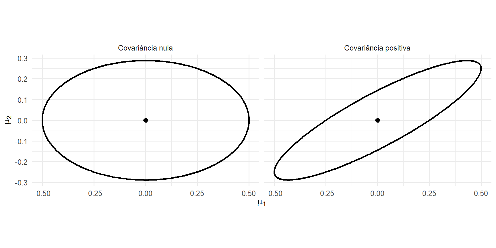

12 Inferência Multivariada
Os Capítulos 8 a 11 construíram os principais objetos probabilísticos e estatísticos utilizados na análise multivariada. Foram definidos o vetor de médias, a matriz de covariâncias, a distribuição normal multivariada, as estatísticas amostrais e o modelo linear multivariado. O objetivo deste capítulo é estabelecer as distribuições amostrais desses objetos e utilizá-las na formulação de testes de hipóteses, regiões de confiança e procedimentos de comparação entre vetores de médias.
A teoria exata será desenvolvida principalmente sob normalidade multivariada. Quando a distribuição populacional não for especificada, resultados assintóticos permitirão construir aproximações sob condições de regularidade. A distinção entre resultados exatos e assintóticos será mantida ao longo do capítulo, pois suas condições de validade e interpretações são diferentes.
O capítulo começa com a distribuição do vetor de médias amostral e a distribuição de Wishart. Em seguida, essas distribuições são aplicadas ao modelo linear multivariado, à estatística \(T^2\) de Hotelling e à comparação entre uma ou duas populações. A parte final reúne as condições de validade da inferência clássica e delimita sua aplicação em problemas de alta dimensão.
12.1 Resultados exatos e assintóticos
A inferência estatística depende da distribuição amostral das estatísticas utilizadas. Em alguns modelos, essa distribuição pode ser determinada para qualquer tamanho amostral. Em outros, conhece-se apenas seu comportamento limite quando o tamanho da amostra cresce. Resultados assintóticos exigem condições de regularidade e sua utilização em amostras finitas constitui uma aproximação (Vaart, 1998).
Definição 12.1 (Resultados exatos e assintóticos) Um resultado exato descreve a distribuição de uma estatística para um tamanho amostral finito. Sua validade depende das hipóteses probabilísticas utilizadas na derivação.
Um resultado assintótico descreve o comportamento limite de uma estatística quando o tamanho amostral tende ao infinito. Sua utilização em amostras finitas constitui uma aproximação cuja qualidade depende da distribuição populacional, da dimensão e do tamanho da amostra.
A teoria exata apresentada neste capítulo será baseada, em grande parte, em amostras provenientes de uma população normal multivariada. A teoria assintótica considerará, em geral, a dimensão \(p\) fixa e
\[ n\longrightarrow\infty. \]
Essa distinção será indicada explicitamente em cada resultado.
12.1.1 Distribuição da média amostral
Considere uma amostra aleatória
\[ \boldsymbol{\mathsf X}_1, \ldots, \boldsymbol{\mathsf X}_n \in \mathbb R^p \]
de uma população com vetor de médias
\[ E \left( \boldsymbol{\mathsf X}_i \right) = \boldsymbol{\mu} \in \mathbb R^p \]
e matriz de covariâncias
\[ \operatorname{Cov} \left( \boldsymbol{\mathsf X}_i \right) = \boldsymbol{\Sigma} \in \mathbb R^{p\times p}. \]
O vetor de médias amostral é
\[ \bar{\boldsymbol{\mathsf X}} = \frac{1}{n} \sum_{i=1}^n \boldsymbol{\mathsf X}_i. \]
Como estabelecido no Capítulo 10,
\[ E \left( \bar{\boldsymbol{\mathsf X}} \right) = \boldsymbol{\mu} \]
e
\[ \operatorname{Cov} \left( \bar{\boldsymbol{\mathsf X}} \right) = \frac{\boldsymbol{\Sigma}}{n}. \]
Essas identidades dependem da existência dos momentos de primeira e segunda ordens, mas não exigem normalidade.
Teorema 12.1 (Distribuição da média amostral sob normalidade) Se
\[ \boldsymbol{\mathsf X}_1, \ldots, \boldsymbol{\mathsf X}_n \stackrel{\mathrm{iid}}{\sim} N_p \left( \boldsymbol{\mu}, \boldsymbol{\Sigma} \right), \]
então
\[ \bar{\boldsymbol{\mathsf X}} \sim N_p \left( \boldsymbol{\mu}, \frac{\boldsymbol{\Sigma}}{n} \right). \tag{12.1}\]
O resultado é exato para qualquer tamanho amostral \(n\).
Comprovação. O vetor de médias amostral é uma combinação linear dos vetores da amostra:
\[ \bar{\boldsymbol{\mathsf X}} = \frac{1}{n} \sum_{i=1}^n \boldsymbol{\mathsf X}_i. \]
Como os vetores são independentes e normais multivariados, sua combinação linear também possui distribuição normal multivariada.
A esperança é
\[ \begin{aligned} E \left( \bar{\boldsymbol{\mathsf X}} \right) &= \frac{1}{n} \sum_{i=1}^n E \left( \boldsymbol{\mathsf X}_i \right) \\ &= \frac{1}{n} \sum_{i=1}^n \boldsymbol{\mu} \\ &= \boldsymbol{\mu}. \end{aligned} \]
Pela independência,
\[ \begin{aligned} \operatorname{Cov} \left( \bar{\boldsymbol{\mathsf X}} \right) &= \frac{1}{n^2} \sum_{i=1}^n \operatorname{Cov} \left( \boldsymbol{\mathsf X}_i \right) \\ &= \frac{1}{n^2} \sum_{i=1}^n \boldsymbol{\Sigma} \\ &= \frac{\boldsymbol{\Sigma}}{n}. \end{aligned} \]
Esses parâmetros determinam a distribuição apresentada no enunciado.
O mesmo resultado pode ser verificado por combinações lineares. Para qualquer vetor fixo
\[ \mathbf a \in \mathbb R^p, \]
tem-se
\[ \mathbf a^\top \bar{\boldsymbol{\mathsf X}} = \frac{1}{n} \sum_{i=1}^n \mathbf a^\top \boldsymbol{\mathsf X}_i. \]
Como
\[ \mathbf a^\top \boldsymbol{\mathsf X}_i \sim N \left( \mathbf a^\top \boldsymbol{\mu}, \mathbf a^\top \boldsymbol{\Sigma} \mathbf a \right), \]
segue que
\[ \mathbf a^\top \bar{\boldsymbol{\mathsf X}} \sim N \left( \mathbf a^\top \boldsymbol{\mu}, \frac{ \mathbf a^\top \boldsymbol{\Sigma} \mathbf a }{n} \right). \]
Portanto, todas as combinações lineares de \(\bar{\boldsymbol{\mathsf X}}\) possuem distribuições normais com os parâmetros correspondentes a Equação 12.1.
Se
\[ \boldsymbol{\Sigma}\succ\mathbf 0, \]
a média amostral pode ser padronizada:
\[ \sqrt n\, \boldsymbol{\Sigma}^{-1/2} \left( \bar{\boldsymbol{\mathsf X}} - \boldsymbol{\mu} \right) \sim N_p \left( \mathbf 0, \mathbf I_p \right). \tag{12.2}\]
A norma quadrática do vetor normal padrão possui distribuição qui-quadrado. Consequentemente,
\[ n \left( \bar{\boldsymbol{\mathsf X}} - \boldsymbol{\mu} \right)^\top \boldsymbol{\Sigma}^{-1} \left( \bar{\boldsymbol{\mathsf X}} - \boldsymbol{\mu} \right) \sim \chi_p^2. \tag{12.3}\]
A expressão em Equação 12.3 é o quadrado da distância de Mahalanobis entre \(\bar{\boldsymbol{\mathsf X}}\) e \(\boldsymbol{\mu}\), calculado na escala da matriz de covariâncias da média amostral.
Esse resultado será utilizado posteriormente para construir o teste e a região de confiança do vetor de médias quando \(\boldsymbol{\Sigma}\) for conhecida.
Considere agora uma transformação afim
\[ \boldsymbol{\mathsf U}_i = \mathbf A \boldsymbol{\mathsf X}_i + \mathbf b, \]
em que
\[ \mathbf A \in \mathbb R^{r\times p} \qquad \text{e} \qquad \mathbf b \in \mathbb R^r \]
são fixos. O vetor de médias transformado é
\[ \bar{\boldsymbol{\mathsf U}} = \mathbf A \bar{\boldsymbol{\mathsf X}} + \mathbf b. \]
Sob normalidade,
\[ \bar{\boldsymbol{\mathsf U}} \sim N_r \left( \mathbf A\boldsymbol{\mu} + \mathbf b, \frac{ \mathbf A \boldsymbol{\Sigma} \mathbf A^\top }{n} \right). \tag{12.4}\]
Essa propriedade permite formular inferência sobre combinações lineares ou subconjuntos das médias populacionais. Os resultados desta subseção são clássicos na teoria normal multivariada.
12.1.2 Teorema Central do Limite multivariado
Quando a população não é normal, a distribuição exata de
\[ \bar{\boldsymbol{\mathsf X}} \]
depende da distribuição conjunta das observações. Para vetores independentes e identicamente distribuídos, com dimensão fixa e matriz de covariâncias finita, o Teorema Central do Limite multivariado estabelece a convergência da média amostral padronizada para uma distribuição normal multivariada (Vaart, 1998).
Teorema 12.2 (Teorema Central do Limite multivariado) Considere, para uma dimensão fixa \(p\), vetores aleatórios independentes e identicamente distribuídos
\[ \boldsymbol{\mathsf X}_1, \ldots, \boldsymbol{\mathsf X}_n \in \mathbb R^p, \]
com
\[ E \left( \boldsymbol{\mathsf X}_i \right) = \boldsymbol{\mu} \]
e matriz de covariâncias finita
\[ \operatorname{Cov} \left( \boldsymbol{\mathsf X}_i \right) = \boldsymbol{\Sigma}. \]
Então,
\[ \sqrt n \left( \bar{\boldsymbol{\mathsf X}} - \boldsymbol{\mu} \right) \xrightarrow{d} N_p \left( \mathbf 0, \boldsymbol{\Sigma} \right). \tag{12.5}\]
Comprovação. Para qualquer vetor fixo
\[ \mathbf a \in \mathbb R^p, \]
considere a combinação linear
\[ \sqrt n\, \mathbf a^\top \left( \bar{\boldsymbol{\mathsf X}} - \boldsymbol{\mu} \right) = \frac{1}{\sqrt n} \sum_{i=1}^n \mathbf a^\top \left( \boldsymbol{\mathsf X}_i - \boldsymbol{\mu} \right). \]
As variáveis aleatórias
\[ \mathbf a^\top \boldsymbol{\mathsf X}_1, \ldots, \mathbf a^\top \boldsymbol{\mathsf X}_n \]
são independentes e identicamente distribuídas, com média
\[ \mathbf a^\top \boldsymbol{\mu} \]
e variância finita
\[ \mathbf a^\top \boldsymbol{\Sigma} \mathbf a. \]
Pelo Teorema Central do Limite univariado,
\[ \sqrt n\, \mathbf a^\top \left( \bar{\boldsymbol{\mathsf X}} - \boldsymbol{\mu} \right) \xrightarrow{d} N \left( 0, \mathbf a^\top \boldsymbol{\Sigma} \mathbf a \right). \]
Como essa convergência vale para toda combinação linear fixa, o princípio de Cramér–Wold fornece a convergência multivariada apresentada em Equação 12.5.
O teorema implica que, para amostras suficientemente grandes,
\[ \bar{\boldsymbol{\mathsf X}} \]
pode ser aproximado por uma distribuição
\[ N_p \left( \boldsymbol{\mu}, \frac{\boldsymbol{\Sigma}}{n} \right). \tag{12.6}\]
A expressão em Equação 12.6 é exata sob normalidade populacional e assintótica sob as condições do Teorema 12.2.
Se
\[ \boldsymbol{\Sigma}\succ\mathbf 0, \]
a aplicação de uma transformação linear contínua em Equação 12.5 fornece
\[ \sqrt n\, \boldsymbol{\Sigma}^{-1/2} \left( \bar{\boldsymbol{\mathsf X}} - \boldsymbol{\mu} \right) \xrightarrow{d} N_p \left( \mathbf 0, \mathbf I_p \right). \tag{12.7}\]
Pelo teorema da aplicação contínua,
\[ n \left( \bar{\boldsymbol{\mathsf X}} - \boldsymbol{\mu} \right)^\top \boldsymbol{\Sigma}^{-1} \left( \bar{\boldsymbol{\mathsf X}} - \boldsymbol{\mu} \right) \xrightarrow{d} \chi_p^2. \tag{12.8}\]
Sob normalidade, Equação 12.3 é uma identidade distribucional exata. Sem normalidade, Equação 12.8 fornece uma aproximação assintótica.
A distribuição da média amostral descreve a incerteza associada à localização. Quando a matriz de covariâncias populacional é desconhecida, sua substituição por uma estatística amostral exige conhecer a distribuição dessa estatística e sua relação com a média amostral. A distribuição de Wishart fornece essa base.
12.2 Distribuição de Wishart
A inferência sobre a matriz de covariâncias depende da distribuição da SSCP amostral. No caso univariado, a soma de quadrados de variáveis normais padronizadas possui distribuição qui-quadrado. A distribuição de Wishart estende essa construção para somas de produtos externos de vetores normais e constitui a principal distribuição matricial da inferência normal multivariada (Muirhead, 1982).
12.2.1 Construção e parametrização
Considere vetores aleatórios independentes
\[ \boldsymbol{\mathsf Z}_1, \ldots, \boldsymbol{\mathsf Z}_{\nu} \in \mathbb R^p \]
tais que
\[ \boldsymbol{\mathsf Z}_j \sim N_p \left( \mathbf 0, \boldsymbol{\Sigma} \right), \qquad j=1,\ldots,\nu, \]
em que
\[ \boldsymbol{\Sigma} \in \mathbb R^{p\times p} \]
é simétrica e positiva definida.
Cada produto externo
\[ \boldsymbol{\mathsf Z}_j \boldsymbol{\mathsf Z}_j^\top \]
é uma matriz simétrica, semidefinida positiva e de posto igual a 1, exceto no evento de probabilidade zero em que o vetor é nulo.
Definição 12.2 (Distribuição de Wishart) Se
\[ \boldsymbol{\mathsf Z}_1, \ldots, \boldsymbol{\mathsf Z}_{\nu} \stackrel{\mathrm{iid}}{\sim} N_p \left( \mathbf 0, \boldsymbol{\Sigma} \right), \]
com \(\nu\in\mathbb N\), a matriz aleatória
\[ \boldsymbol{\mathsf W} = \sum_{j=1}^{\nu} \boldsymbol{\mathsf Z}_j \boldsymbol{\mathsf Z}_j^\top \tag{12.9}\]
segue uma distribuição de Wishart com \(\nu\) graus de liberdade e matriz de escala \(\boldsymbol{\Sigma}\).
Utiliza-se a notação
\[ \boldsymbol{\mathsf W} \sim W_p \left( \nu, \boldsymbol{\Sigma} \right). \tag{12.10}\]
A parametrização adotada neste capítulo satisfaz
\[ E \left( \boldsymbol{\mathsf W} \right) = \nu \boldsymbol{\Sigma}. \]
Por isso, \(\boldsymbol{\Sigma}\) é denominada matriz de escala. A literatura também utiliza parametrizações baseadas na matriz de escala inversa ou em normalizações distintas. Assim, fórmulas de densidade, momentos e verossimilhança devem ser interpretadas de acordo com a parametrização declarada (Muirhead, 1982).
A distribuição qui-quadrado é recuperada quando
\[ p=1. \]
Nesse caso, se
\[ \boldsymbol{\Sigma} = \begin{bmatrix} \sigma^2 \end{bmatrix}, \]
então
\[ \mathsf W = \sum_{j=1}^{\nu} \mathsf Z_j^2 \]
e
\[ \frac{\mathsf W}{\sigma^2} \sim \chi_\nu^2. \tag{12.11}\]
A distribuição de Wishart é, portanto, uma generalização matricial da distribuição qui-quadrado.
12.2.2 Suporte, posto e densidade
A matriz em Equação 12.9 pode ser escrita como
\[ \boldsymbol{\mathsf W} = \boldsymbol{\mathcal Z}^\top \boldsymbol{\mathcal Z}, \tag{12.12}\]
em que
\[ \boldsymbol{\mathcal Z} = \begin{bmatrix} \boldsymbol{\mathsf Z}_1^\top\\ \vdots\\ \boldsymbol{\mathsf Z}_{\nu}^\top \end{bmatrix} \in \mathbb R^{\nu\times p}. \]
Essa representação mostra que \(\boldsymbol{\mathsf W}\) é uma matriz de Gram. Logo,
\[ \boldsymbol{\mathsf W} \succeq \mathbf 0 \]
e
\[ \operatorname{posto} \left( \boldsymbol{\mathsf W} \right) = \operatorname{posto} \left( \boldsymbol{\mathcal Z} \right) \leq \min \left( \nu,p \right). \]
Teorema 12.3 (Posto de uma matriz Wishart) Se
\[ \boldsymbol{\mathsf W} \sim W_p \left( \nu, \boldsymbol{\Sigma} \right), \]
com \(\nu\in\mathbb N\) e
\[ \boldsymbol{\Sigma}\succ\mathbf 0, \]
então, com probabilidade 1,
\[ \operatorname{posto} \left( \boldsymbol{\mathsf W} \right) = \min \left( \nu,p \right). \tag{12.13}\]
Consequentemente:
se \(\nu\geq p\), então
\[ \boldsymbol{\mathsf W} \succ \mathbf 0 \]
com probabilidade 1;
se \(\nu<p\), então \(\boldsymbol{\mathsf W}\) é singular e possui posto \(\nu\) com probabilidade 1.
A condição
\[ \nu\geq p \]
é necessária para que a construção clássica produza uma matriz positiva definida.
Quando
\[ \nu>p-1 \]
é um número real, a distribuição de Wishart não singular também pode ser definida diretamente por sua densidade no cone das matrizes simétricas positivas definidas.
Teorema 12.4 (Densidade da distribuição de Wishart) Se
\[ \boldsymbol{\mathsf W} \sim W_p \left( \nu, \boldsymbol{\Sigma} \right), \]
com
\[ \nu>p-1 \qquad \text{e} \qquad \boldsymbol{\Sigma}\succ\mathbf 0, \]
sua densidade é
\[ f_{\boldsymbol{\mathsf W}} \left( \mathbf W \right) = \frac{ \left| \mathbf W \right|^{(\nu-p-1)/2} \exp \left[ -\frac{1}{2} \operatorname{tr} \left( \boldsymbol{\Sigma}^{-1} \mathbf W \right) \right] }{ 2^{\nu p/2} \left| \boldsymbol{\Sigma} \right|^{\nu/2} \Gamma_p \left( \nu/2 \right) }, \tag{12.14}\]
para
\[ \mathbf W\succ\mathbf 0, \]
e é igual a zero fora desse conjunto.
A função gama multivariada é
\[ \Gamma_p \left( a \right) = \pi^{p(p-1)/4} \prod_{j=1}^p \Gamma \left( a-\frac{j-1}{2} \right), \tag{12.15}\]
definida para
\[ a>\frac{p-1}{2}. \]
Na construção por soma de vetores normais, \(\nu\) é inteiro. Quando \(\nu<p\), a matriz é singular e não possui densidade em relação à medida de Lebesgue no espaço das matrizes simétricas de dimensão
\[ \frac{p(p+1)}{2}. \]
Nesse caso, a distribuição está concentrada no subconjunto de matrizes semidefinidas positivas com posto não superior a \(\nu\).
12.2.3 Momentos e propriedades
A distribuição de Wishart preserva, em forma matricial, várias propriedades da distribuição qui-quadrado.
Teorema 12.5 (Momentos de uma matriz Wishart) Se
\[ \boldsymbol{\mathsf W} \sim W_p \left( \nu, \boldsymbol{\Sigma} \right), \]
então
\[ E \left( \boldsymbol{\mathsf W} \right) = \nu \boldsymbol{\Sigma}. \tag{12.16}\]
Para os elementos
\[ \mathsf W_{jk} \qquad \text{e} \qquad \mathsf W_{\ell m}, \]
tem-se
\[ \operatorname{Cov} \left( \mathsf W_{jk}, \mathsf W_{\ell m} \right) = \nu \left( \sigma_{j\ell}\sigma_{km} + \sigma_{jm}\sigma_{k\ell} \right). \tag{12.17}\]
Comprovação. Pela construção em Equação 12.9,
\[ \mathsf W_{jk} = \sum_{h=1}^{\nu} \mathsf Z_{hj} \mathsf Z_{hk}. \]
Como
\[ E \left( \mathsf Z_{hj} \mathsf Z_{hk} \right) = \sigma_{jk}, \]
segue que
\[ \begin{aligned} E \left( \mathsf W_{jk} \right) &= \sum_{h=1}^{\nu} E \left( \mathsf Z_{hj} \mathsf Z_{hk} \right) \\ &= \nu\sigma_{jk}. \end{aligned} \]
A igualdade vale para todos os elementos, o que fornece
\[ E \left( \boldsymbol{\mathsf W} \right) = \nu \boldsymbol{\Sigma}. \]
Para a covariância entre dois elementos, a independência dos vetores associados a índices \(h\) distintos elimina os termos cruzados. Para um vetor normal com média zero, a identidade dos momentos de quarta ordem fornece
\[ E \left( \mathsf Z_j \mathsf Z_k \mathsf Z_\ell \mathsf Z_m \right) = \sigma_{jk}\sigma_{\ell m} + \sigma_{j\ell}\sigma_{km} + \sigma_{jm}\sigma_{k\ell}. \]
Subtraindo o produto das médias e somando as \(\nu\) contribuições independentes, obtém-se Equação 12.17.
Em particular, para um elemento diagonal,
\[ \operatorname{Var} \left( \mathsf W_{jj} \right) = 2\nu\sigma_{jj}^2. \tag{12.18}\]
Para um elemento fora da diagonal,
\[ \operatorname{Var} \left( \mathsf W_{jk} \right) = \nu \left( \sigma_{jj}\sigma_{kk} + \sigma_{jk}^2 \right), \qquad j\neq k. \tag{12.19}\]
A esperança cresce linearmente com \(\nu\), enquanto a variabilidade dos elementos também é proporcional aos graus de liberdade. A matriz média por grau de liberdade,
\[ \frac{ \boldsymbol{\mathsf W} }{\nu}, \]
possui esperança \(\boldsymbol{\Sigma}\) e torna-se mais concentrada em torno dessa matriz à medida que \(\nu\) cresce.
A propriedade qui-quadrado também vale para qualquer direção fixa.
Teorema 12.6 (Forma quadrática de uma matriz Wishart) Se
\[ \boldsymbol{\mathsf W} \sim W_p \left( \nu, \boldsymbol{\Sigma} \right) \]
e
\[ \mathbf a \in \mathbb R^p \]
é não nulo, então
\[ \frac{ \mathbf a^\top \boldsymbol{\mathsf W} \mathbf a }{ \mathbf a^\top \boldsymbol{\Sigma} \mathbf a } \sim \chi_\nu^2. \tag{12.20}\]
Comprovação. Pela construção da matriz Wishart,
\[ \mathbf a^\top \boldsymbol{\mathsf W} \mathbf a = \sum_{j=1}^{\nu} \left( \mathbf a^\top \boldsymbol{\mathsf Z}_j \right)^2. \]
Cada combinação linear satisfaz
\[ \mathbf a^\top \boldsymbol{\mathsf Z}_j \sim N \left( 0, \mathbf a^\top \boldsymbol{\Sigma} \mathbf a \right). \]
Logo,
\[ \frac{ \mathbf a^\top \boldsymbol{\mathsf Z}_j }{ \sqrt{ \mathbf a^\top \boldsymbol{\Sigma} \mathbf a } } \sim N \left( 0,1 \right). \]
A soma dos quadrados de \(\nu\) variáveis normais padrão independentes possui distribuição \(\chi_\nu^2\).
A forma quadrática em Equação 12.20 mostra que a distribuição de Wishart reúne simultaneamente as distribuições das somas de quadrados de todas as combinações lineares dos vetores normais.
A soma de matrizes Wishart independentes com a mesma escala também permanece na família.
Teorema 12.7 (Aditividade da distribuição de Wishart) Se
\[ \boldsymbol{\mathsf W}_1 \sim W_p \left( \nu_1, \boldsymbol{\Sigma} \right) \]
e
\[ \boldsymbol{\mathsf W}_2 \sim W_p \left( \nu_2, \boldsymbol{\Sigma} \right) \]
são independentes, então
\[ \boldsymbol{\mathsf W}_1 + \boldsymbol{\mathsf W}_2 \sim W_p \left( \nu_1+\nu_2, \boldsymbol{\Sigma} \right). \tag{12.21}\]
A exigência de uma escala comum é necessária. A soma de matrizes Wishart independentes com escalas diferentes não possui, em geral, uma distribuição Wishart.
As transformações lineares produzem uma propriedade de equivariância.
Teorema 12.8 (Transformação linear de uma matriz Wishart) Se
\[ \boldsymbol{\mathsf W} \sim W_p \left( \nu, \boldsymbol{\Sigma} \right) \]
e
\[ \mathbf A \in \mathbb R^{r\times p} \]
é uma matriz fixa com posto linha completo \(r\), então
\[ \mathbf A \boldsymbol{\mathsf W} \mathbf A^\top \sim W_r \left( \nu, \mathbf A \boldsymbol{\Sigma} \mathbf A^\top \right). \tag{12.22}\]
Comprovação. Pela construção de Wishart,
\[ \begin{aligned} \mathbf A \boldsymbol{\mathsf W} \mathbf A^\top &= \mathbf A \left( \sum_{j=1}^{\nu} \boldsymbol{\mathsf Z}_j \boldsymbol{\mathsf Z}_j^\top \right) \mathbf A^\top \\ &= \sum_{j=1}^{\nu} \left( \mathbf A \boldsymbol{\mathsf Z}_j \right) \left( \mathbf A \boldsymbol{\mathsf Z}_j \right)^\top. \end{aligned} \]
Como
\[ \mathbf A \boldsymbol{\mathsf Z}_j \sim N_r \left( \mathbf 0, \mathbf A \boldsymbol{\Sigma} \mathbf A^\top \right), \]
e esses vetores permanecem independentes, a soma possui a distribuição apresentada no enunciado.
O posto linha completo garante que
\[ \mathbf A \boldsymbol{\Sigma} \mathbf A^\top \succ \mathbf 0. \]
Se \(\mathbf A\) tiver posto inferior a \(r\), a matriz transformada continuará semidefinida positiva, mas sua distribuição será singular e ficará concentrada em um subespaço de menor dimensão.
Para uma matriz quadrada não singular \(\mathbf A\),
\[ \mathbf A \boldsymbol{\mathsf W} \mathbf A^\top \sim W_p \left( \nu, \mathbf A \boldsymbol{\Sigma} \mathbf A^\top \right). \]
Em particular, utilizando
\[ \mathbf A = \boldsymbol{\Sigma}^{-1/2}, \]
obtém-se a padronização
\[ \boldsymbol{\Sigma}^{-1/2} \boldsymbol{\mathsf W} \boldsymbol{\Sigma}^{-1/2} \sim W_p \left( \nu, \mathbf I_p \right). \tag{12.23}\]
12.2.4 Distribuição da covariância amostral
No Capítulo 10, a SSCP amostral aleatória foi definida por
\[ \boldsymbol{\mathsf A} = \sum_{i=1}^n \left( \boldsymbol{\mathsf X}_i - \bar{\boldsymbol{\mathsf X}} \right) \left( \boldsymbol{\mathsf X}_i - \bar{\boldsymbol{\mathsf X}} \right)^\top, \]
e a matriz de covariâncias amostral por
\[ \boldsymbol{\mathsf S} = \frac{ \boldsymbol{\mathsf A} }{n-1}. \]
A distribuição de Wishart descreve exatamente a variabilidade da SSCP sob amostragem normal.
Teorema 12.9 (Distribuição da SSCP e da covariância amostral) Se
\[ \boldsymbol{\mathsf X}_1, \ldots, \boldsymbol{\mathsf X}_n \stackrel{\mathrm{iid}}{\sim} N_p \left( \boldsymbol{\mu}, \boldsymbol{\Sigma} \right), \]
com
\[ n\geq2 \qquad \text{e} \qquad \boldsymbol{\Sigma}\succ\mathbf 0, \]
então
\[ \boldsymbol{\mathsf A} = (n-1) \boldsymbol{\mathsf S} \sim W_p \left( n-1, \boldsymbol{\Sigma} \right). \tag{12.24}\]
Comprovação. Organize os vetores da amostra nas linhas da matriz aleatória
\[ \boldsymbol{\mathcal X} = \begin{bmatrix} \boldsymbol{\mathsf X}_1^\top\\ \vdots\\ \boldsymbol{\mathsf X}_n^\top \end{bmatrix} \in \mathbb R^{n\times p}. \]
Considere uma matriz ortogonal
\[ \mathbf Q \in \mathbb R^{n\times n} \]
cuja primeira linha seja
\[ \frac{1}{\sqrt n} \mathbf 1_n^\top. \]
Defina
\[ \boldsymbol{\mathcal Z} = \mathbf Q \boldsymbol{\mathcal X}. \]
A primeira linha de \(\boldsymbol{\mathcal Z}\) é
\[ \boldsymbol{\mathsf Z}_1^\top = \sqrt n\, \bar{\boldsymbol{\mathsf X}}^\top. \]
As demais linhas correspondem a combinações lineares das observações cujos coeficientes somam zero. Portanto, elas possuem média nula.
Como \(\mathbf Q\) é ortogonal, a transformação preserva a estrutura de covariâncias entre as linhas. Sob normalidade conjunta, as linhas transformadas são independentes, com
\[ \boldsymbol{\mathsf Z}_j \sim N_p \left( \mathbf 0, \boldsymbol{\Sigma} \right), \qquad j=2,\ldots,n. \]
A matriz de centralização pode ser escrita como
\[ \mathbf H_n = \mathbf Q^\top \begin{bmatrix} 0 & \mathbf 0^\top\\ \mathbf 0 & \mathbf I_{n-1} \end{bmatrix} \mathbf Q. \]
Logo,
\[ \begin{aligned} \boldsymbol{\mathsf A} &= \boldsymbol{\mathcal X}^\top \mathbf H_n \boldsymbol{\mathcal X} \\ &= \boldsymbol{\mathcal Z}^\top \begin{bmatrix} 0 & \mathbf 0^\top\\ \mathbf 0 & \mathbf I_{n-1} \end{bmatrix} \boldsymbol{\mathcal Z} \\ &= \sum_{j=2}^n \boldsymbol{\mathsf Z}_j \boldsymbol{\mathsf Z}_j^\top. \end{aligned} \]
Essa é a soma de \(n-1\) produtos externos de vetores independentes com distribuição
\[ N_p \left( \mathbf 0, \boldsymbol{\Sigma} \right). \]
Portanto,
\[ \boldsymbol{\mathsf A} \sim W_p \left( n-1, \boldsymbol{\Sigma} \right). \]
A esperança da SSCP é
\[ E \left( \boldsymbol{\mathsf A} \right) = (n-1) \boldsymbol{\Sigma}. \]
Consequentemente,
\[ E \left( \boldsymbol{\mathsf S} \right) = \boldsymbol{\Sigma}, \]
recuperando a ausência de viés estabelecida no Capítulo 10.
A distribuição de \(\boldsymbol{\mathsf S}\) pode ser expressa por
\[ (n-1) \boldsymbol{\mathsf S} \sim W_p \left( n-1, \boldsymbol{\Sigma} \right), \]
ou, de maneira equivalente,
\[ \boldsymbol{\mathsf S} \sim \frac{1}{n-1} W_p \left( n-1, \boldsymbol{\Sigma} \right). \]
A segunda notação representa uma matriz Wishart reescalada e não uma nova parametrização da família.
Para os elementos de \(\boldsymbol{\mathsf S}\),
\[ \operatorname{Cov} \left( \mathsf S_{jk}, \mathsf S_{\ell m} \right) = \frac{ \sigma_{j\ell}\sigma_{km} + \sigma_{jm}\sigma_{k\ell} }{ n-1 }. \tag{12.25}\]
Em particular,
\[ \operatorname{Var} \left( \mathsf S_{jj} \right) = \frac{ 2\sigma_{jj}^2 }{ n-1 } \]
e
\[ \operatorname{Var} \left( \mathsf S_{jk} \right) = \frac{ \sigma_{jj}\sigma_{kk} + \sigma_{jk}^2 }{ n-1 }, \qquad j\neq k. \]
Essas expressões são exatas sob normalidade.
O posto da covariância amostral satisfaz, com probabilidade 1,
\[ \operatorname{posto} \left( \boldsymbol{\mathsf S} \right) = \min \left( p,n-1 \right). \tag{12.26}\]
Portanto:
se
\[ n-1\geq p, \]
então \(\boldsymbol{\mathsf S}\) é positiva definida com probabilidade 1;
se
\[ p\geq n, \]
então \(\boldsymbol{\mathsf S}\) é singular com probabilidade 1.
A condição necessária para a utilização da inversa clássica de \(\boldsymbol{\mathsf S}\) é
\[ n>p. \tag{12.27}\]
Essa condição aparecerá na distribuição exata da estatística \(T^2\) de Hotelling.
12.2.5 Independência entre média e covariância
A transformação ortogonal utilizada na prova do Teorema 12.9 também separa a informação sobre a média da informação sobre a dispersão.
A primeira linha da matriz transformada depende exclusivamente de
\[ \bar{\boldsymbol{\mathsf X}}, \]
enquanto as demais linhas determinam
\[ \boldsymbol{\mathsf A} \]
e
\[ \boldsymbol{\mathsf S}. \]
Sob normalidade, essas linhas são independentes.
Teorema 12.10 (Independência entre média e covariância amostral) Se
\[ \boldsymbol{\mathsf X}_1, \ldots, \boldsymbol{\mathsf X}_n \stackrel{\mathrm{iid}}{\sim} N_p \left( \boldsymbol{\mu}, \boldsymbol{\Sigma} \right), \]
com
\[ n\geq2 \qquad \text{e} \qquad \boldsymbol{\Sigma}\succ\mathbf 0, \]
então
\[ \bar{\boldsymbol{\mathsf X}} \perp \boldsymbol{\mathsf A}. \]
Como
\[ \boldsymbol{\mathsf S} = \frac{ \boldsymbol{\mathsf A} }{n-1}, \]
também se tem
\[ \bar{\boldsymbol{\mathsf X}} \perp \boldsymbol{\mathsf S}. \tag{12.28}\]
Comprovação. Na transformação utilizada na prova do Teorema 12.9, a primeira linha é
\[ \boldsymbol{\mathsf Z}_1^\top = \sqrt n\, \bar{\boldsymbol{\mathsf X}}^\top. \]
A SSCP é função apenas das demais linhas:
\[ \boldsymbol{\mathsf A} = \sum_{j=2}^n \boldsymbol{\mathsf Z}_j \boldsymbol{\mathsf Z}_j^\top. \]
As linhas
\[ \boldsymbol{\mathsf Z}_1, \ldots, \boldsymbol{\mathsf Z}_n \]
são conjuntamente normais. A ortogonalidade da transformação produz covariâncias cruzadas nulas entre linhas distintas e, sob normalidade conjunta, covariância nula implica independência.
Assim,
\[ \boldsymbol{\mathsf Z}_1 \perp \left( \boldsymbol{\mathsf Z}_2, \ldots, \boldsymbol{\mathsf Z}_n \right). \]
Como \(\bar{\boldsymbol{\mathsf X}}\) é função de \(\boldsymbol{\mathsf Z}_1\) e \(\boldsymbol{\mathsf A}\) é função das demais linhas, conclui-se que
\[ \bar{\boldsymbol{\mathsf X}} \perp \boldsymbol{\mathsf A}. \]
A independência entre \(\bar{\boldsymbol{\mathsf X}}\) e \(\boldsymbol{\mathsf S}\) decorre do fato de \(\boldsymbol{\mathsf S}\) ser uma transformação determinística de \(\boldsymbol{\mathsf A}\).
A independência em Equação 12.28 é um resultado exato e depende da normalidade multivariada. Para uma população geral, mesmo quando as observações são independentes e possuem momentos finitos,
\[ \bar{\boldsymbol{\mathsf X}} \]
e
\[ \boldsymbol{\mathsf S} \]
não são, em geral, independentes.
A distribuição da média, a distribuição de Wishart da SSCP e a independência entre esses dois objetos fornecem a base para substituir \(\boldsymbol{\Sigma}\) por \(\boldsymbol{\mathsf S}\) em procedimentos inferenciais exatos. A mesma estrutura aparecerá no modelo linear multivariado, com a média amostral substituída pelo estimador da matriz de parâmetros e os \(n-1\) graus de liberdade substituídos pelos graus de liberdade residuais.
12.3 Distribuições no modelo linear multivariado
O Capítulo 11 formulou o modelo linear multivariado, construiu os estimadores, os resíduos e as matrizes de somas de quadrados e produtos cruzados. Sob o modelo normal matricial, esses objetos possuem distribuições normais matriciais ou de Wishart, e a ortogonalidade entre as projeções permite estabelecer independências utilizadas na inferência exata (Anderson, 2003).
Considere
\[ \boldsymbol{\mathcal Y} = \mathbf Z\mathbf B + \boldsymbol{\mathcal E}, \]
em que
\[ \boldsymbol{\mathcal Y} \in \mathbb R^{n\times p}, \qquad \mathbf Z \in \mathbb R^{n\times q}, \qquad \mathbf B \in \mathbb R^{q\times p}, \]
e
\[ \boldsymbol{\mathcal E} \mid \mathbf Z \sim N_{n\times p} \left( \mathbf 0, \mathbf I_n, \boldsymbol{\Sigma} \right), \]
com
\[ \boldsymbol{\Sigma} \succ \mathbf 0. \]
Equivalentemente,
\[ \boldsymbol{\mathcal Y} \mid \mathbf Z \sim N_{n\times p} \left( \mathbf Z\mathbf B, \mathbf I_n, \boldsymbol{\Sigma} \right). \tag{12.29}\]
A matriz de delineamento é tratada como fixa ou condicionada nos valores observados. Defina
\[ r = \operatorname{posto} \left( \mathbf Z \right) \leq q, \]
\[ \mathbf P_Z = \mathbf Z\mathbf Z^+ \]
e
\[ \mathbf M_Z = \mathbf I_n-\mathbf P_Z. \]
As distribuições desta seção são condicionais a \(\mathbf Z\). Essa indicação será mantida nos resultados principais.
12.3.1 Distribuição do estimador da matriz de parâmetros
Quando
\[ r=q, \]
a matriz de parâmetros é identificada e o estimador de mínimos quadrados é
\[ \widehat{\mathbf B} = \left( \mathbf Z^\top \mathbf Z \right)^{-1} \mathbf Z^\top \boldsymbol{\mathcal Y}. \]
Substituindo o modelo,
\[ \widehat{\mathbf B} = \mathbf B + \left( \mathbf Z^\top \mathbf Z \right)^{-1} \mathbf Z^\top \boldsymbol{\mathcal E}. \tag{12.30}\]
A segunda parcela é uma transformação linear da matriz normal de erros.
Teorema 12.11 (Distribuição do estimador da matriz de parâmetros) Sob o modelo normal matricial e a condição
\[ \operatorname{posto} \left( \mathbf Z \right) = q, \]
tem-se
\[ \widehat{\mathbf B} \mid \mathbf Z \sim N_{q\times p} \left[ \mathbf B, \left( \mathbf Z^\top \mathbf Z \right)^{-1}, \boldsymbol{\Sigma} \right]. \tag{12.31}\]
Equivalentemente,
\[ \operatorname{vec} \left( \widehat{\mathbf B} \right) \mid \mathbf Z \sim N_{pq} \left[ \operatorname{vec} \left( \mathbf B \right), \boldsymbol{\Sigma} \otimes \left( \mathbf Z^\top \mathbf Z \right)^{-1} \right]. \tag{12.32}\]
Comprovação. Defina
\[ \mathbf A_Z = \left( \mathbf Z^\top \mathbf Z \right)^{-1} \mathbf Z^\top. \]
Pela Equação 12.30,
\[ \widehat{\mathbf B} = \mathbf B + \mathbf A_Z \boldsymbol{\mathcal E}. \]
A propriedade de transformação da distribuição normal matricial fornece
\[ \mathbf A_Z \boldsymbol{\mathcal E} \mid \mathbf Z \sim N_{q\times p} \left( \mathbf 0, \mathbf A_Z\mathbf A_Z^\top, \boldsymbol{\Sigma} \right). \]
Como
\[ \begin{aligned} \mathbf A_Z\mathbf A_Z^\top &= \left( \mathbf Z^\top \mathbf Z \right)^{-1} \mathbf Z^\top \mathbf Z \left( \mathbf Z^\top \mathbf Z \right)^{-1} \\ &= \left( \mathbf Z^\top \mathbf Z \right)^{-1}, \end{aligned} \]
obtém-se a distribuição matricial do enunciado. A forma vetorizada decorre da definição da distribuição normal matricial.
Para os elementos do estimador,
\[ \operatorname{Cov} \left( \widehat B_{hj}, \widehat B_{\ell k} \mid \mathbf Z \right) = \left[ \left( \mathbf Z^\top \mathbf Z \right)^{-1} \right]_{h\ell} \sigma_{jk}. \tag{12.33}\]
A covariância entre dois coeficientes estimados combina:
- a relação entre os termos do delineamento;
- a covariância residual entre as respostas.
Quando a matriz de delineamento possui posto deficiente, a matriz \(\mathbf B\) não é identificada de forma única. A pseudoinversa produz o representante
\[ \widehat{\mathbf B}_0 = \mathbf Z^+ \boldsymbol{\mathcal Y}, \]
cuja distribuição é
\[ \widehat{\mathbf B}_0 \mid \mathbf Z \sim N_{q\times p} \left[ \mathbf Z^+\mathbf Z\mathbf B, \mathbf Z^+ \left( \mathbf Z^+ \right)^\top, \boldsymbol{\Sigma} \right]. \tag{12.34}\]
A média dessa distribuição é
\[ \mathbf Z^+\mathbf Z\mathbf B, \]
e não necessariamente \(\mathbf B\). Esse resultado reflete a não identificação dos componentes de \(\mathbf B\) pertencentes ao núcleo de \(\mathbf Z\).
A inferência deve ser formulada sobre funções estimáveis.
Considere
\[ \mathbf C \in \mathbb R^{g\times q} \]
satisfazendo
\[ \mathbf C = \mathbf C\mathbf Z^+\mathbf Z, \tag{12.35}\]
e uma matriz fixa
\[ \mathbf M \in \mathbb R^{p\times s}. \]
A função paramétrica bilateral é
\[ \boldsymbol{\Theta} = \mathbf C\mathbf B\mathbf M \in \mathbb R^{g\times s}. \]
Seu estimador é
\[ \widehat{\boldsymbol{\Theta}} = \mathbf C \mathbf Z^+ \boldsymbol{\mathcal Y} \mathbf M. \tag{12.36}\]
Defina
\[ \mathbf G_C = \mathbf C \mathbf Z^+ \left( \mathbf Z^+ \right)^\top \mathbf C^\top \in \mathbb R^{g\times g} \tag{12.37}\]
e
\[ \boldsymbol{\Sigma}_M = \mathbf M^\top \boldsymbol{\Sigma} \mathbf M \in \mathbb R^{s\times s}. \tag{12.38}\]
Teorema 12.12 (Distribuição de uma função estimável) Sob o modelo normal matricial, se
\[ \mathbf C = \mathbf C\mathbf Z^+\mathbf Z, \]
então
\[ \widehat{\boldsymbol{\Theta}} \mid \mathbf Z \sim N_{g\times s} \left( \mathbf C\mathbf B\mathbf M, \mathbf G_C, \boldsymbol{\Sigma}_M \right). \tag{12.39}\]
Equivalentemente,
\[ \operatorname{vec} \left( \widehat{\boldsymbol{\Theta}} \right) \mid \mathbf Z \sim N_{gs} \left[ \operatorname{vec} \left( \mathbf C\mathbf B\mathbf M \right), \boldsymbol{\Sigma}_M \otimes \mathbf G_C \right]. \tag{12.40}\]
Comprovação. Substituindo o modelo em Equação 12.36,
\[ \begin{aligned} \widehat{\boldsymbol{\Theta}} &= \mathbf C \mathbf Z^+ \left( \mathbf Z\mathbf B + \boldsymbol{\mathcal E} \right) \mathbf M \\ &= \mathbf C \mathbf Z^+\mathbf Z \mathbf B \mathbf M + \mathbf C \mathbf Z^+ \boldsymbol{\mathcal E} \mathbf M. \end{aligned} \]
Pela condição de estimabilidade,
\[ \mathbf C\mathbf Z^+\mathbf Z = \mathbf C. \]
Logo,
\[ \widehat{\boldsymbol{\Theta}} = \mathbf C\mathbf B\mathbf M + \mathbf C \mathbf Z^+ \boldsymbol{\mathcal E} \mathbf M. \]
Aplicando a propriedade de transformação da normal matricial,
\[ \mathbf C \mathbf Z^+ \boldsymbol{\mathcal E} \mathbf M \mid \mathbf Z \sim N_{g\times s} \left( \mathbf 0, \mathbf G_C, \boldsymbol{\Sigma}_M \right), \]
o que fornece o resultado.
Se as linhas de \(\mathbf C\) representam funções estimáveis linearmente independentes, então
\[ \mathbf G_C\succ\mathbf 0. \]
Se \(\mathbf M\) possui posto coluna completo e
\[ \boldsymbol{\Sigma}\succ\mathbf 0, \]
então
\[ \boldsymbol{\Sigma}_M\succ\mathbf 0. \]
Restrições redundantes ou combinações redundantes das respostas produzem distribuições normais singulares. Nesse caso, a hipótese deve ser reescrita utilizando bases dos espaços correspondentes.
Sob posto coluna completo de \(\mathbf Z\),
\[ \mathbf Z^+ = \left( \mathbf Z^\top \mathbf Z \right)^{-1} \mathbf Z^\top \]
e
\[ \mathbf G_C = \mathbf C \left( \mathbf Z^\top \mathbf Z \right)^{-1} \mathbf C^\top. \]
Assim, o resultado geral recupera a distribuição usual de contrastes do modelo de posto completo.
12.3.2 Distribuição da SSCP residual
A matriz aleatória de resíduos é
\[ \widehat{\boldsymbol{\mathcal U}} = \mathbf M_Z \boldsymbol{\mathcal Y}. \]
Como
\[ \mathbf M_Z\mathbf Z = \mathbf 0, \]
tem-se
\[ \widehat{\boldsymbol{\mathcal U}} = \mathbf M_Z \boldsymbol{\mathcal E}. \tag{12.41}\]
Pela transformação da distribuição normal matricial,
\[ \widehat{\boldsymbol{\mathcal U}} \mid \mathbf Z \sim N_{n\times p} \left( \mathbf 0, \mathbf M_Z, \boldsymbol{\Sigma} \right). \tag{12.42}\]
Essa distribuição é singular sempre que
\[ r>0, \]
pois
\[ \operatorname{posto} \left( \mathbf M_Z \right) = n-r<n. \]
A SSCP residual aleatória é
\[ \boldsymbol{\mathsf E}_{\mathrm{res}} = \widehat{\boldsymbol{\mathcal U}}^\top \widehat{\boldsymbol{\mathcal U}} = \boldsymbol{\mathcal Y}^\top \mathbf M_Z \boldsymbol{\mathcal Y}. \tag{12.43}\]
Para a matriz observada de respostas,
\[ \mathbf E = \mathbf Y^\top \mathbf M_Z \mathbf Y. \]
Teorema 12.13 (Distribuição da SSCP residual) Sob o modelo linear normal multivariado,
\[ \boldsymbol{\mathsf E}_{\mathrm{res}} \mid \mathbf Z \sim W_p \left( n-r, \boldsymbol{\Sigma} \right). \tag{12.44}\]
Consequentemente,
\[ E \left( \boldsymbol{\mathsf E}_{\mathrm{res}} \mid \mathbf Z \right) = (n-r) \boldsymbol{\Sigma}. \tag{12.45}\]
Comprovação. Como \(\mathbf M_Z\) é um projetor ortogonal de posto \(n-r\), existe uma matriz ortogonal
\[ \mathbf Q \in \mathbb R^{n\times n} \]
tal que
\[ \mathbf M_Z = \mathbf Q^\top \begin{bmatrix} \mathbf I_{n-r} & \mathbf 0\\ \mathbf 0 & \mathbf 0_r \end{bmatrix} \mathbf Q. \]
Defina
\[ \boldsymbol{\mathcal A} = \mathbf Q \boldsymbol{\mathcal E}. \]
Como \(\mathbf Q\) é ortogonal,
\[ \boldsymbol{\mathcal A} \mid \mathbf Z \sim N_{n\times p} \left( \mathbf 0, \mathbf I_n, \boldsymbol{\Sigma} \right). \]
Portanto, suas linhas
\[ \boldsymbol{\mathsf A}_1, \ldots, \boldsymbol{\mathsf A}_n \]
são independentes e possuem distribuição
\[ N_p \left( \mathbf 0, \boldsymbol{\Sigma} \right). \]
Além disso,
\[ \begin{aligned} \boldsymbol{\mathsf E}_{\mathrm{res}} &= \boldsymbol{\mathcal E}^\top \mathbf M_Z \boldsymbol{\mathcal E} \\ &= \boldsymbol{\mathcal A}^\top \begin{bmatrix} \mathbf I_{n-r} & \mathbf 0\\ \mathbf 0 & \mathbf 0_r \end{bmatrix} \boldsymbol{\mathcal A} \\ &= \sum_{j=1}^{n-r} \boldsymbol{\mathsf A}_j \boldsymbol{\mathsf A}_j^\top. \end{aligned} \]
Essa é a construção de uma matriz Wishart com \(n-r\) graus de liberdade e matriz de escala \(\boldsymbol{\Sigma}\).
O estimador não viesado da matriz de covariâncias residual é
\[ \widehat{\boldsymbol{\Sigma}} = \frac{ \boldsymbol{\mathsf E}_{\mathrm{res}} }{ n-r }, \]
quando
\[ n-r>0. \]
Sua distribuição pode ser expressa por
\[ (n-r) \widehat{\boldsymbol{\Sigma}} \mid \mathbf Z \sim W_p \left( n-r, \boldsymbol{\Sigma} \right). \tag{12.46}\]
Para qualquer vetor não nulo
\[ \mathbf a \in \mathbb R^p, \]
segue da propriedade direcional da Wishart que
\[ \frac{ (n-r) \mathbf a^\top \widehat{\boldsymbol{\Sigma}} \mathbf a }{ \mathbf a^\top \boldsymbol{\Sigma} \mathbf a } \mid \mathbf Z \sim \chi_{n-r}^2. \tag{12.47}\]
Essa expressão descreve a distribuição exata da variância residual estimada para qualquer combinação linear das respostas.
O posto da SSCP residual satisfaz, com probabilidade 1,
\[ \operatorname{posto} \left( \boldsymbol{\mathsf E}_{\mathrm{res}} \right) = \min \left( p,n-r \right). \tag{12.48}\]
Portanto, a condição necessária e suficiente, com probabilidade 1 sob o modelo normal não singular, para que
\[ \boldsymbol{\mathsf E}_{\mathrm{res}} \succ \mathbf 0 \]
é
\[ n-r\geq p. \tag{12.49}\]
Quando
\[ p>n-r, \]
a SSCP residual e o estimador de covariâncias são necessariamente singulares.
12.3.3 Independência entre estimador e resíduo
A distribuição exata dos procedimentos inferenciais depende da separação entre:
- a informação utilizada para estimar as funções paramétricas;
- a informação residual utilizada para estimar \(\boldsymbol{\Sigma}\).
Essa separação é produzida por projeções ortogonais.
Considere o representante de mínimos quadrados obtido pela pseudoinversa:
\[ \widehat{\mathbf B}_0 = \mathbf Z^+ \boldsymbol{\mathcal Y}. \]
Seu erro em relação ao representante populacional correspondente é
\[ \widehat{\mathbf B}_0 - \mathbf Z^+\mathbf Z\mathbf B = \mathbf Z^+ \boldsymbol{\mathcal E}. \]
A matriz residual é
\[ \widehat{\boldsymbol{\mathcal U}} = \mathbf M_Z \boldsymbol{\mathcal E}. \]
As transformações aplicadas às linhas dos erros satisfazem
\[ \mathbf Z^+\mathbf M_Z = \mathbf 0. \tag{12.50}\]
Teorema 12.14 (Independência entre estimador e resíduo) Sob o modelo linear normal multivariado,
\[ \widehat{\mathbf B}_0 \perp \widehat{\boldsymbol{\mathcal U}} \mid \mathbf Z. \tag{12.51}\]
Consequentemente,
\[ \widehat{\mathbf B}_0 \perp \boldsymbol{\mathsf E}_{\mathrm{res}} \mid \mathbf Z. \tag{12.52}\]
Para qualquer função estimável,
\[ \widehat{\boldsymbol{\Theta}} = \mathbf C \widehat{\mathbf B}_0 \mathbf M, \]
tem-se
\[ \widehat{\boldsymbol{\Theta}} \perp \boldsymbol{\mathsf E}_{\mathrm{res}} \mid \mathbf Z. \tag{12.53}\]
Comprovação. As matrizes
\[ \mathbf Z^+ \boldsymbol{\mathcal E} \]
e
\[ \mathbf M_Z \boldsymbol{\mathcal E} \]
são transformações lineares da mesma matriz normal. Portanto, são conjuntamente normais.
A covariância cruzada entre suas linhas é determinada por
\[ \mathbf Z^+ \mathbf I_n \mathbf M_Z^\top. \]
Como \(\mathbf M_Z\) é simétrica e
\[ \begin{aligned} \mathbf Z^+\mathbf M_Z &= \mathbf Z^+ \left( \mathbf I_n-\mathbf Z\mathbf Z^+ \right) \\ &= \mathbf Z^+ - \mathbf Z^+\mathbf Z\mathbf Z^+ \\ &= \mathbf 0, \end{aligned} \]
a covariância cruzada é nula.
Sob normalidade conjunta, covariância cruzada nula implica independência. Logo,
\[ \mathbf Z^+ \boldsymbol{\mathcal E} \perp \mathbf M_Z \boldsymbol{\mathcal E}. \]
A adição da matriz não aleatória
\[ \mathbf Z^+\mathbf Z\mathbf B \]
não altera a independência. Como a SSCP residual é uma função de \(\widehat{\boldsymbol{\mathcal U}}\), conclui-se também a independência entre o estimador e a SSCP.
Sob posto coluna completo,
\[ \widehat{\mathbf B}_0 = \widehat{\mathbf B}, \]
e o resultado reduz-se a
\[ \widehat{\mathbf B} \perp \boldsymbol{\mathsf E}_{\mathrm{res}} \mid \mathbf Z. \tag{12.54}\]
Essa propriedade generaliza a independência entre a média e a covariância amostrais. No modelo contendo somente intercepto,
\[ \widehat{\mathbf B} = \bar{\boldsymbol{\mathsf X}}^\top \]
e
\[ \boldsymbol{\mathsf E}_{\mathrm{res}} = (n-1) \boldsymbol{\mathsf S}. \]
A independência não decorre apenas da ortogonalidade algébrica das projeções. A passagem de covariância cruzada nula para independência utiliza a normalidade conjunta dos erros.
12.3.4 Distribuição da SSCP da hipótese
Considere a hipótese linear bilateral
\[ H_0: \mathbf C\mathbf B\mathbf M = \boldsymbol{\Theta}_0, \tag{12.55}\]
em que
\[ \mathbf C \in \mathbb R^{g\times q}, \qquad \mathbf M \in \mathbb R^{p\times s}, \qquad \boldsymbol{\Theta}_0 \in \mathbb R^{g\times s}. \]
Suponha que:
\[ \mathbf C = \mathbf C\mathbf Z^+\mathbf Z; \]
as linhas de \(\mathbf C\) representem \(g\) funções estimáveis linearmente independentes; e \(\mathbf M\) possua posto coluna completo \(s\).
Nessas condições,
\[ \mathbf G_C = \mathbf C \mathbf Z^+ \left( \mathbf Z^+ \right)^\top \mathbf C^\top \succ \mathbf 0 \]
e
\[ \boldsymbol{\Sigma}_M = \mathbf M^\top \boldsymbol{\Sigma} \mathbf M \succ \mathbf 0. \]
Defina a matriz aleatória de discrepâncias:
\[ \boldsymbol{\mathcal D} = \mathbf C \mathbf Z^+ \boldsymbol{\mathcal Y} \mathbf M - \boldsymbol{\Theta}_0. \tag{12.56}\]
Para os dados observados, sua realização é
\[ \widehat{\boldsymbol{\Delta}} = \mathbf C \mathbf Z^+ \mathbf Y \mathbf M - \boldsymbol{\Theta}_0. \]
A SSCP aleatória da hipótese é
\[ \boldsymbol{\mathsf H} = \boldsymbol{\mathcal D}^\top \mathbf G_C^{-1} \boldsymbol{\mathcal D}. \tag{12.57}\]
Sua realização observada é a matriz definida no Capítulo 11:
\[ \mathbf H = \widehat{\boldsymbol{\Delta}}^\top \mathbf G_C^{-1} \widehat{\boldsymbol{\Delta}}. \]
Sob a hipótese nula,
\[ \boldsymbol{\mathcal D} \mid \mathbf Z \sim N_{g\times s} \left( \mathbf 0, \mathbf G_C, \boldsymbol{\Sigma}_M \right). \tag{12.58}\]
Teorema 12.15 (Distribuição da SSCP da hipótese) Considere o modelo linear normal multivariado
\[ \boldsymbol{\mathcal Y} = \mathbf Z\mathbf B + \boldsymbol{\mathcal E}, \]
com
\[ \boldsymbol{\mathcal E} \mid \mathbf Z \sim N_{n\times p} \left( \mathbf 0, \mathbf I_n, \boldsymbol{\Sigma} \right), \qquad \boldsymbol{\Sigma}\succ\mathbf 0, \]
e defina
\[ r = \operatorname{posto} \left( \mathbf Z \right), \qquad n-r\geq1. \]
Considere a hipótese
\[ H_0: \mathbf C\mathbf B\mathbf M = \boldsymbol{\Theta}_0, \]
em que
\[ \mathbf C \in \mathbb R^{g\times q}, \qquad \mathbf M \in \mathbb R^{p\times s}, \qquad \boldsymbol{\Theta}_0 \in \mathbb R^{g\times s}. \]
Suponha que
\[ \mathbf C = \mathbf C\mathbf Z^+\mathbf Z, \]
\[ \operatorname{posto} \left( \mathbf C \right) = g \]
e
\[ \operatorname{posto} \left( \mathbf M \right) = s. \]
Defina
\[ \mathbf G_C = \mathbf C \mathbf Z^+ \left( \mathbf Z^+ \right)^\top \mathbf C^\top \]
e
\[ \boldsymbol{\Sigma}_M = \mathbf M^\top \boldsymbol{\Sigma} \mathbf M. \]
Sob \(H_0\), a SSCP da hipótese satisfaz
\[ \boldsymbol{\mathsf H} \mid \mathbf Z \sim W_s \left( g, \boldsymbol{\Sigma}_M \right). \tag{12.59}\]
A SSCP residual transformada,
\[ \boldsymbol{\mathsf E}_M = \mathbf M^\top \boldsymbol{\mathsf E}_{\mathrm{res}} \mathbf M, \tag{12.60}\]
satisfaz
\[ \boldsymbol{\mathsf E}_M \mid \mathbf Z \sim W_s \left( n-r, \boldsymbol{\Sigma}_M \right). \tag{12.61}\]
Além disso,
\[ \boldsymbol{\mathsf H} \perp \boldsymbol{\mathsf E}_M \mid \mathbf Z. \tag{12.62}\]
Comprovação. Sob \(H_0\),
\[ \boldsymbol{\mathcal D} \mid \mathbf Z \sim N_{g\times s} \left( \mathbf 0, \mathbf G_C, \boldsymbol{\Sigma}_M \right). \]
Padronizando as linhas,
\[ \mathbf G_C^{-1/2} \boldsymbol{\mathcal D} \mid \mathbf Z \sim N_{g\times s} \left( \mathbf 0, \mathbf I_g, \boldsymbol{\Sigma}_M \right). \]
As \(g\) linhas da matriz padronizada são independentes e possuem distribuição
\[ N_s \left( \mathbf 0, \boldsymbol{\Sigma}_M \right). \]
Como
\[ \begin{aligned} \boldsymbol{\mathsf H} &= \boldsymbol{\mathcal D}^\top \mathbf G_C^{-1} \boldsymbol{\mathcal D} \\ &= \left( \mathbf G_C^{-1/2} \boldsymbol{\mathcal D} \right)^\top \left( \mathbf G_C^{-1/2} \boldsymbol{\mathcal D} \right), \end{aligned} \]
a matriz possui distribuição
\[ W_s \left( g, \boldsymbol{\Sigma}_M \right). \]
Pela propriedade de transformação da Wishart,
\[ \begin{aligned} \boldsymbol{\mathsf E}_M &= \mathbf M^\top \boldsymbol{\mathsf E}_{\mathrm{res}} \mathbf M \\ &\sim W_s \left( n-r, \mathbf M^\top \boldsymbol{\Sigma} \mathbf M \right). \end{aligned} \]
Por fim, \(\boldsymbol{\mathsf H}\) é função de
\[ \widehat{\boldsymbol{\Theta}} = \mathbf C\mathbf Z^+ \boldsymbol{\mathcal Y}\mathbf M, \]
enquanto \(\boldsymbol{\mathsf E}_M\) é função da matriz residual. A independência estabelecida no Teorema 12.14 fornece o último resultado.
O par de distribuições pode ser resumido por
\[ \boldsymbol{\mathsf H} \mid \mathbf Z \sim W_s \left( g, \boldsymbol{\Sigma}_M \right), \]
\[ \boldsymbol{\mathsf E}_M \mid \mathbf Z \sim W_s \left( n-r, \boldsymbol{\Sigma}_M \right), \]
com
\[ \boldsymbol{\mathsf H} \perp \boldsymbol{\mathsf E}_M \mid \mathbf Z. \tag{12.63}\]
As duas matrizes possuem a mesma escala \(\boldsymbol{\Sigma}_M\), mas graus de liberdade distintos:
- \(g\) corresponde ao número de restrições paramétricas independentes;
- \(n-r\) corresponde aos graus de liberdade residuais.
Essa estrutura constitui a base probabilística dos testes multivariados no modelo linear.
Sob a hipótese alternativa, defina a discrepância populacional
\[ \boldsymbol{\Delta}_0 = \mathbf C\mathbf B\mathbf M - \boldsymbol{\Theta}_0. \tag{12.64}\]
Nesse caso,
\[ \boldsymbol{\mathcal D} \mid \mathbf Z \sim N_{g\times s} \left( \boldsymbol{\Delta}_0, \mathbf G_C, \boldsymbol{\Sigma}_M \right). \]
A matriz \(\boldsymbol{\mathsf H}\) possui uma distribuição de Wishart não central. Na parametrização baseada no branqueamento das respostas, sua matriz de não centralidade é
\[ \boldsymbol{\Omega} = \boldsymbol{\Sigma}_M^{-1/2} \boldsymbol{\Delta}_0^\top \mathbf G_C^{-1} \boldsymbol{\Delta}_0 \boldsymbol{\Sigma}_M^{-1/2}. \tag{12.65}\]
A matriz \(\boldsymbol{\Omega}\) é simétrica e semidefinida positiva. Ela mede o afastamento da hipótese nula depois de considerar:
- a precisão das combinações paramétricas, por meio de \(\mathbf G_C^{-1}\);
- a escala e a dependência entre as respostas transformadas, por meio de \(\boldsymbol{\Sigma}_M^{-1/2}\).
A esperança da SSCP da hipótese sob a alternativa é
\[ E \left( \boldsymbol{\mathsf H} \mid \mathbf Z \right) = g \boldsymbol{\Sigma}_M + \boldsymbol{\Delta}_0^\top \mathbf G_C^{-1} \boldsymbol{\Delta}_0. \tag{12.66}\]
Sob \(H_0\),
\[ \boldsymbol{\Delta}_0 = \mathbf 0 \]
e
\[ \boldsymbol{\Omega} = \mathbf 0, \]
recuperando a distribuição Wishart central.
A matriz de não centralidade será utilizada para interpretar o poder dos testes. Quanto maior o afastamento padronizado em relação à hipótese nula, maior tende a ser a separação entre as distribuições da estatística sob \(H_0\) e sob a alternativa.
As distribuições obtidas nesta seção são resultados exatos do modelo normal matricial. Elas fornecem a base para construir testes a partir das matrizes de hipótese e erro. A próxima seção introduzirá nível de significância, poder, não centralidade e razão de verossimilhanças antes de aplicar esses princípios à inferência sobre vetores de médias.
12.4 Princípios de testes multivariados
Um teste de hipóteses utiliza a informação amostral para avaliar uma afirmação sobre um parâmetro populacional. No contexto multivariado, essa afirmação pode envolver:
- um vetor de médias;
- uma matriz de covariâncias;
- a matriz de parâmetros de um modelo linear;
- uma função estimável dos parâmetros;
- várias combinações das respostas simultaneamente.
A construção de um teste exige especificar as hipóteses, definir uma estatística e uma região crítica e determinar sua distribuição sob a hipótese nula. O nível controla a probabilidade de rejeição indevida dentro do espaço nulo, enquanto o poder descreve a probabilidade de rejeição sob alternativas (Casella; Berger, 2002).
12.4.1 Hipóteses, nível, poder e não centralidade
Considere um modelo estatístico indexado por um parâmetro
\[ \boldsymbol{\vartheta} \in \mathcal P, \]
em que \(\mathcal P\) é o espaço paramétrico. As hipóteses podem ser escritas como
\[ H_0: \boldsymbol{\vartheta} \in \mathcal P_0 \]
e
\[ H_1: \boldsymbol{\vartheta} \in \mathcal P_1, \]
com
\[ \mathcal P_0 \cap \mathcal P_1 = \varnothing \]
e, em geral,
\[ \mathcal P_1 = \mathcal P\setminus\mathcal P_0. \]
Uma hipótese é simples quando especifica completamente o parâmetro. Por exemplo,
\[ H_0: \boldsymbol{\mu} = \boldsymbol{\mu}_0. \]
Uma hipótese é composta quando admite mais de um valor do parâmetro. No modelo linear multivariado, a hipótese
\[ H_0: \mathbf C\mathbf B\mathbf M = \boldsymbol{\Theta}_0 \]
é geralmente composta porque não especifica todos os elementos de \(\mathbf B\) e de \(\boldsymbol{\Sigma}\).
Uma regra de teste pode ser definida por uma região crítica
\[ \mathcal R, \]
formada pelos resultados amostrais que conduzem à rejeição de \(H_0\).
Se \(\boldsymbol{\mathcal X}\) representa os dados aleatórios, a função de teste não aleatorizada é
\[ \varphi \left( \boldsymbol{\mathcal X} \right) = \begin{cases} 1, & \boldsymbol{\mathcal X}\in\mathcal R, \\ 0, & \boldsymbol{\mathcal X}\notin\mathcal R. \end{cases} \tag{12.67}\]
O valor 1 representa a rejeição da hipótese nula, enquanto o valor 0 representa sua não rejeição.
Definição 12.3 (Tamanho e nível de significância) O tamanho de um teste é
\[ \sup_{ \boldsymbol{\vartheta} \in \mathcal P_0 } P_{\boldsymbol{\vartheta}} \left[ \varphi \left( \boldsymbol{\mathcal X} \right) = 1 \right]. \tag{12.68}\]
O teste possui nível de significância \(\alpha\) quando
\[ \sup_{ \boldsymbol{\vartheta} \in \mathcal P_0 } P_{\boldsymbol{\vartheta}} \left[ \varphi \left( \boldsymbol{\mathcal X} \right) = 1 \right] \leq \alpha. \tag{12.69}\]
A rejeição de uma hipótese nula verdadeira constitui o erro do tipo I. O nível \(\alpha\) limita a maior probabilidade desse erro entre os valores do parâmetro permitidos por \(H_0\).
Quando a probabilidade de rejeição é exatamente \(\alpha\) para algum valor ou para todos os valores relevantes sob \(H_0\), diz-se que o teste possui tamanho \(\alpha\).
Valores frequentemente adotados são
\[ \alpha = 0{,}10, \qquad \alpha = 0{,}05 \]
e
\[ \alpha = 0{,}01. \]
A escolha deve ser realizada antes da observação dos resultados e considerar as consequências de uma rejeição incorreta.
Quando \(H_0\) é falsa, a não rejeição constitui o erro do tipo II.
Definição 12.4 (Função poder) A função poder de um teste é
\[ \pi \left( \boldsymbol{\vartheta} \right) = P_{\boldsymbol{\vartheta}} \left[ \varphi \left( \boldsymbol{\mathcal X} \right) = 1 \right]. \tag{12.70}\]
Para
\[ \boldsymbol{\vartheta} \in \mathcal P_1, \]
a probabilidade do erro do tipo II é
\[ \beta \left( \boldsymbol{\vartheta} \right) = 1- \pi \left( \boldsymbol{\vartheta} \right). \tag{12.71}\]
Um teste de nível \(\alpha\) satisfaz
\[ \pi \left( \boldsymbol{\vartheta} \right) \leq \alpha, \qquad \boldsymbol{\vartheta} \in \mathcal P_0. \]
Sob a hipótese alternativa, são desejáveis valores elevados de
\[ \pi \left( \boldsymbol{\vartheta} \right). \]
O nível controla a probabilidade de rejeição incorreta. O poder descreve a capacidade de detectar desvios em relação à hipótese nula. Um teste pode controlar adequadamente o erro do tipo I e, ao mesmo tempo, possuir baixo poder para alternativas próximas.
12.4.1.1 Não centralidade
Sob a hipótese nula, muitas estatísticas possuem distribuições centrais, como:
\[ \chi^2, \qquad F \]
ou Wishart central.
Sob a hipótese alternativa, as mesmas estatísticas podem possuir distribuições não centrais. O parâmetro de não centralidade quantifica o afastamento da hipótese nula na escala determinada pela variabilidade do problema.
Considere, por exemplo, a hipótese
\[ H_0: \boldsymbol{\mu} = \boldsymbol{\mu}_0 \]
para uma população com matriz de covariâncias conhecida e positiva definida.
A distância quadrática entre o vetor verdadeiro e o valor especificado é
\[ \delta^2 = \left( \boldsymbol{\mu} - \boldsymbol{\mu}_0 \right)^\top \boldsymbol{\Sigma}^{-1} \left( \boldsymbol{\mu} - \boldsymbol{\mu}_0 \right). \tag{12.72}\]
Para uma amostra de tamanho \(n\), o parâmetro de não centralidade é
\[ \lambda = n\delta^2 = n \left( \boldsymbol{\mu} - \boldsymbol{\mu}_0 \right)^\top \boldsymbol{\Sigma}^{-1} \left( \boldsymbol{\mu} - \boldsymbol{\mu}_0 \right). \tag{12.73}\]
Sob \(H_0\),
\[ \lambda=0. \]
Sob uma alternativa diferente de \(\boldsymbol{\mu}_0\),
\[ \lambda>0. \]
A não centralidade aumenta quando:
- o tamanho amostral cresce;
- o afastamento entre os parâmetros cresce;
- a variabilidade diminui nas direções em que ocorre o afastamento.
A matriz
\[ \boldsymbol{\Omega} = \boldsymbol{\Sigma}_M^{-1/2} \boldsymbol{\Delta}_0^\top \mathbf G_C^{-1} \boldsymbol{\Delta}_0 \boldsymbol{\Sigma}_M^{-1/2}, \]
definida na seção anterior, exerce função análoga para a hipótese linear multivariada. No problema escalar, a não centralidade é um número. Em hipóteses matriciais, o afastamento pode ser representado por uma matriz semidefinida positiva.
O poder não aumenta necessariamente com a inclusão de novas respostas. Variáveis que acrescentam informação sobre a diferença investigada podem elevar a não centralidade. Variáveis pouco informativas aumentam a dimensão e exigem a estimação de novas variâncias e covariâncias.
A matriz de covariâncias de \(p\) respostas possui
\[ \frac{p(p+1)}{2} \]
elementos distintos. Por isso, o crescimento de \(p\) sem aumento correspondente de \(n\) pode reduzir a precisão, prejudicar o poder e impedir a inversão das matrizes necessárias aos procedimentos clássicos.
12.4.1.2 Teste global e testes marginais
Uma hipótese vetorial como
\[ H_0: \boldsymbol{\mu} = \boldsymbol{\mu}_0 \]
representa uma única afirmação global. Realizar separadamente os testes
\[ H_{0j}: \mu_j = \mu_{0j}, \qquad j=1,\ldots,p, \]
todos com nível \(\alpha\), não garante que a probabilidade de pelo menos uma rejeição incorreta seja igual a \(\alpha\).
Se os testes forem independentes, essa probabilidade será
\[ 1- \left( 1-\alpha \right)^p. \tag{12.74}\]
Para
\[ p=5 \]
e
\[ \alpha=0{,}05, \]
obtém-se
\[ 1- \left( 1-0{,}05 \right)^5 = 1-0{,}95^5 \approx 0{,}226. \]
Nesse caso, a probabilidade de pelo menos uma rejeição incorreta é aproximadamente
\[ 22{,}6\%. \]
Quando os testes são dependentes, Equação 12.74 não se aplica diretamente. A realização de vários testes marginais também não controla automaticamente o nível global.
12.4.1.3 Valor-p e decisão
Considere uma estatística \(\mathsf T\) para a qual valores elevados fornecem evidência contra \(H_0\). O valor-p observado é
\[ p_{\mathrm{obs}} = P_{H_0} \left( \mathsf T \geq t_{\mathrm{obs}} \right). \tag{12.75}\]
A regra usual é
\[ \begin{cases} \text{rejeitar }H_0, & p_{\mathrm{obs}} \leq \alpha, \\ \text{não rejeitar }H_0, & p_{\mathrm{obs}} > \alpha. \end{cases} \]
Não rejeitar \(H_0\) não demonstra que a hipótese seja verdadeira. A decisão indica que os dados não produziram evidência suficiente para rejeitá-la no nível adotado.
O valor-p também não mede:
- o tamanho do efeito;
- a relevância prática da diferença;
- a probabilidade de \(H_0\) ser verdadeira;
- o poder do teste.
A interpretação deve considerar as estimativas, as regiões de confiança, o tamanho amostral e o contexto substantivo.
12.4.2 Razão de verossimilhanças
A razão de verossimilhanças compara a verossimilhança maximizada sob a hipótese nula com a verossimilhança maximizada no espaço paramétrico completo. Valores pequenos indicam que a restrição imposta por \(H_0\) reduz substancialmente o melhor ajuste alcançável pelo modelo (Casella; Berger, 2002).
Considere a verossimilhança
\[ L \left( \boldsymbol{\vartheta}; \mathbf y \right), \]
com
\[ \boldsymbol{\vartheta} \in \mathcal P, \]
e a hipótese
\[ H_0: \boldsymbol{\vartheta} \in \mathcal P_0, \qquad \mathcal P_0 \subseteq \mathcal P. \]
Defina o estimador irrestrito por
\[ \widehat{\boldsymbol{\vartheta}} = \underset{ \boldsymbol{\vartheta} \in \mathcal P }{ \operatorname{arg\,max} } \, L \left( \boldsymbol{\vartheta}; \mathbf y \right) \]
e o estimador restrito por
\[ \widetilde{\boldsymbol{\vartheta}} = \underset{ \boldsymbol{\vartheta} \in \mathcal P_0 }{ \operatorname{arg\,max} } \, L \left( \boldsymbol{\vartheta}; \mathbf y \right). \]
Definição 12.5 (Estatística da razão de verossimilhanças) A estatística da razão de verossimilhanças é
\[ \Lambda_{\mathrm{RV}} = \frac{ \displaystyle \sup_{ \boldsymbol{\vartheta} \in \mathcal P_0 } L \left( \boldsymbol{\vartheta}; \mathbf y \right) }{ \displaystyle \sup_{ \boldsymbol{\vartheta} \in \mathcal P } L \left( \boldsymbol{\vartheta}; \mathbf y \right) }. \tag{12.76}\]
Quando os máximos são atingidos,
\[ \Lambda_{\mathrm{RV}} = \frac{ L \left( \widetilde{\boldsymbol{\vartheta}}; \mathbf y \right) }{ L \left( \widehat{\boldsymbol{\vartheta}}; \mathbf y \right) }. \]
Como
\[ \mathcal P_0 \subseteq \mathcal P, \]
tem-se
\[ 0 \leq \Lambda_{\mathrm{RV}} \leq 1. \]
Valores próximos de 1 indicam que as restrições de \(H_0\) produzem pequena redução na verossimilhança máxima. Valores reduzidos indicam que o ajuste restrito é substancialmente inferior ao ajuste irrestrito.
A região crítica pode ser escrita como
\[ \mathcal R = \left\{ \mathbf y: \Lambda_{\mathrm{RV}} \leq c_\alpha \right\}. \]
É comum utilizar a transformação
\[ -2 \log \Lambda_{\mathrm{RV}} = 2 \left[ \ell \left( \widehat{\boldsymbol{\vartheta}} \right) - \ell \left( \widetilde{\boldsymbol{\vartheta}} \right) \right], \tag{12.77}\]
em que
\[ \ell \left( \boldsymbol{\vartheta} \right) = \log L \left( \boldsymbol{\vartheta}; \mathbf y \right). \]
A estatística em Equação 12.77 é não negativa. Valores elevados representam uma perda de ajuste relevante causada pelas restrições da hipótese nula.
12.4.2.1 Razão de verossimilhanças em modelos encaixados
Considere dois modelos lineares multivariados encaixados:
- um modelo completo, com SSCP residual observada \(\mathbf E_F\);
- um modelo reduzido, com SSCP residual observada \(\mathbf E_R\).
Como estabelecido no Capítulo 11,
\[ \mathbf E_R = \mathbf E_F + \mathbf H, \tag{12.78}\]
em que \(\mathbf H\) é a SSCP associada às restrições que diferenciam os modelos.
Sob normalidade matricial, depois da maximização em relação à matriz de covariâncias, a verossimilhança maximizada é proporcional a
\[ \left| \mathbf E \right|^{-n/2}, \]
quando a SSCP residual é positiva definida. Assim,
\[ \Lambda_{\mathrm{RV}} = \left( \frac{ \left| \mathbf E_F \right| }{ \left| \mathbf E_R \right| } \right)^{n/2}. \tag{12.79}\]
No modelo linear multivariado normal, a comparação entre modelos encaixados conduz a uma razão de determinantes das matrizes residuais. Esse critério, denominado lambda de Wilks, constitui uma das formulações clássicas da análise de variância multivariada (Wilks, 1932):
\[ \Lambda_{\mathrm W} = \frac{ \left| \mathbf E_F \right| }{ \left| \mathbf E_R \right| } = \frac{ \left| \mathbf E_F \right| }{ \left| \mathbf E_F+\mathbf H \right| } \tag{12.80}\]
é denominada lambda de Wilks. Portanto,
\[ \Lambda_{\mathrm{RV}} = \Lambda_{\mathrm W}^{\,n/2}. \tag{12.81}\]
Os dois critérios são funções monotônicas um do outro e produzem a mesma ordenação das evidências contra a hipótese nula.
A notação distingue:
- \(\Lambda_{\mathrm{RV}}\): razão entre as verossimilhanças maximizadas;
- \(\Lambda_{\mathrm W}\): razão entre os determinantes das SSCP residuais.
Quando
\[ \mathbf E_F\succ\mathbf 0, \]
a lambda de Wilks pode ser escrita como
\[ \Lambda_{\mathrm W} = \frac{1}{ \left| \mathbf I_p + \mathbf E_F^{-1} \mathbf H \right| }. \tag{12.82}\]
Se
\[ \lambda_1,\ldots,\lambda_m \]
são as raízes não nulas do problema
\[ \mathbf H\mathbf v = \lambda \mathbf E_F\mathbf v, \]
então
\[ \Lambda_{\mathrm W} = \prod_{j=1}^m \frac{1}{ 1+\lambda_j }. \tag{12.83}\]
Essa expressão mostra que \(\Lambda_{\mathrm W}\) reúne os afastamentos entre hipótese e erro ao longo das direções determinadas pelas duas SSCP. O desenvolvimento dos critérios multivariados baseados nessas raízes pertence à formulação da MANOVA no Módulo 3.
12.4.3 Resultado assintótico de Wilks
Em muitos problemas, a distribuição exata de
\[ \Lambda_{\mathrm{RV}} \]
não possui uma forma simples. Em modelos paramétricos regulares, com dimensão fixa e parâmetro verdadeiro no interior do espaço paramétrico, a transformação logarítmica da razão de verossimilhanças possui distribuição limite qui-quadrado (Vaart, 1998).
Teorema 12.16 (Resultado assintótico de Wilks) Considere um modelo paramétrico regular com parâmetro
\[ \boldsymbol{\vartheta} \in \mathcal P \subseteq \mathbb R^k. \]
Suponha que:
- o modelo seja identificável;
- o parâmetro verdadeiro pertença ao interior do espaço paramétrico;
- a log-verossimilhança seja suficientemente diferenciável em uma vizinhança do parâmetro verdadeiro;
- a informação de Fisher seja finita e positiva definida;
- a hipótese nula seja definida localmente por \(d\) restrições suaves e linearmente independentes;
- a dimensão paramétrica permaneça fixa quando \(n\to\infty\);
- as demais condições de regularidade necessárias à consistência e à normalidade assintótica dos estimadores de máxima verossimilhança sejam satisfeitas.
Então, sob \(H_0\),
\[ -2 \log \Lambda_{\mathrm{RV}} \xrightarrow{d} \chi_d^2, \tag{12.84}\]
em que \(d\) é a diferença entre as dimensões locais do modelo irrestrito e do modelo restrito.
A aproximação produz a região crítica
\[ -2 \log \Lambda_{\mathrm{RV}} > \chi^2_{d;1-\alpha}, \tag{12.85}\]
em que
\[ \chi^2_{d;1-\alpha} \]
é o quantil de ordem \(1-\alpha\) da distribuição qui-quadrado com \(d\) graus de liberdade.
O valor-p aproximado é
\[ P \left[ \chi_d^2 \geq -2 \log \Lambda_{\mathrm{RV,obs}} \right]. \tag{12.86}\]
O resultado em Equação 12.84 é assintótico. Em determinados modelos normais, a estatística da razão de verossimilhanças pode possuir uma distribuição exata ou admitir uma transformação exata para outra distribuição conhecida. Esses casos devem utilizar a distribuição exata em vez da aproximação geral.
Sob alternativas fixas afastadas de \(H_0\), a estatística
\[ -2 \log \Lambda_{\mathrm{RV}} \]
tende a crescer com \(n\), conduzindo o poder a 1 sob condições usuais de consistência.
Sob alternativas locais que se aproximam de \(H_0\) à taxa
\[ n^{-1/2}, \]
a distribuição limite é frequentemente uma qui-quadrado não central. Seu parâmetro de não centralidade depende da direção do afastamento e da informação de Fisher.
A razão de verossimilhanças fornece um princípio geral de comparação entre modelos e hipóteses. Nas próximas seções, esse princípio será aplicado à inferência sobre um vetor de médias. Primeiro será considerado o caso em que a matriz de covariâncias populacional é conhecida. Em seguida, sua substituição pela covariância amostral conduzirá à estatística \(T^2\) de Hotelling.
12.5 Inferência sobre um vetor de médias
Considere uma amostra aleatória
\[ \boldsymbol{\mathsf X}_1, \ldots, \boldsymbol{\mathsf X}_n \stackrel{\mathrm{iid}}{\sim} N_p \left( \boldsymbol{\mu}, \boldsymbol{\Sigma} \right), \]
em que
\[ \boldsymbol{\mu} \in \mathbb R^p \]
é o vetor de médias populacional e
\[ \boldsymbol{\Sigma} \in \mathbb R^{p\times p} \]
é uma matriz de covariâncias positiva definida.
O problema central desta seção é testar
\[ H_0: \boldsymbol{\mu} = \boldsymbol{\mu}_0 \]
contra
\[ H_1: \boldsymbol{\mu} \neq \boldsymbol{\mu}_0, \]
em que
\[ \boldsymbol{\mu}_0 \in \mathbb R^p \]
é um vetor conhecido.
Primeiro será considerado o caso em que \(\boldsymbol{\Sigma}\) é conhecida. Em seguida, sua substituição pela matriz de covariâncias amostral conduzirá à estatística \(T^2\) de Hotelling.
12.5.1 Covariância conhecida
Pelo Teorema 12.1,
\[ \bar{\boldsymbol{\mathsf X}} \sim N_p \left( \boldsymbol{\mu}, \frac{\boldsymbol{\Sigma}}{n} \right). \]
Sob a hipótese nula,
\[ \bar{\boldsymbol{\mathsf X}} - \boldsymbol{\mu}_0 \sim N_p \left( \mathbf 0, \frac{\boldsymbol{\Sigma}}{n} \right). \]
Como
\[ \boldsymbol{\Sigma}\succ\mathbf 0, \]
o vetor padronizado
\[ \boldsymbol{\mathsf Z}_{\mu} = \sqrt n\, \boldsymbol{\Sigma}^{-1/2} \left( \bar{\boldsymbol{\mathsf X}} - \boldsymbol{\mu}_0 \right) \tag{12.87}\]
possui, sob \(H_0\), distribuição
\[ \boldsymbol{\mathsf Z}_{\mu} \sim N_p \left( \mathbf 0, \mathbf I_p \right). \]
A soma dos quadrados de seus componentes é
\[ \begin{aligned} \boldsymbol{\mathsf Z}_{\mu}^\top \boldsymbol{\mathsf Z}_{\mu} &= n \left( \bar{\boldsymbol{\mathsf X}} - \boldsymbol{\mu}_0 \right)^\top \boldsymbol{\Sigma}^{-1} \left( \bar{\boldsymbol{\mathsf X}} - \boldsymbol{\mu}_0 \right). \end{aligned} \]
Definição 12.6 (Estatística para a média com covariância conhecida) A estatística para testar
\[ H_0: \boldsymbol{\mu} = \boldsymbol{\mu}_0 \]
quando \(\boldsymbol{\Sigma}\) é conhecida é
\[ \mathsf Q_{\mu} = n \left( \bar{\boldsymbol{\mathsf X}} - \boldsymbol{\mu}_0 \right)^\top \boldsymbol{\Sigma}^{-1} \left( \bar{\boldsymbol{\mathsf X}} - \boldsymbol{\mu}_0 \right). \tag{12.88}\]
A estatística \(\mathsf Q_{\mu}\) é a distância de Mahalanobis quadrática entre a média amostral e o vetor especificado pela hipótese, multiplicada por \(n\).
Ela considera simultaneamente:
- as variâncias das componentes;
- as covariâncias entre as variáveis;
- a precisão da média decorrente do tamanho amostral.
Teorema 12.17 (Distribuição com covariância conhecida) Sob
\[ H_0: \boldsymbol{\mu} = \boldsymbol{\mu}_0, \]
tem-se
\[ \mathsf Q_{\mu} \sim \chi_p^2. \tag{12.89}\]
Sob uma alternativa fixa
\[ \boldsymbol{\mu} \neq \boldsymbol{\mu}_0, \]
tem-se
\[ \mathsf Q_{\mu} \sim \chi_p^2 \left( \lambda_{\mu} \right), \tag{12.90}\]
em que
\[ \lambda_{\mu} = n \left( \boldsymbol{\mu} - \boldsymbol{\mu}_0 \right)^\top \boldsymbol{\Sigma}^{-1} \left( \boldsymbol{\mu} - \boldsymbol{\mu}_0 \right). \tag{12.91}\]
Comprovação. Sob \(H_0\), o vetor definido em Equação 12.87 possui distribuição normal padrão multivariada. Portanto,
\[ \mathsf Q_{\mu} = \boldsymbol{\mathsf Z}_{\mu}^\top \boldsymbol{\mathsf Z}_{\mu} \sim \chi_p^2. \]
Sob a alternativa,
\[ \boldsymbol{\mathsf Z}_{\mu} \sim N_p \left[ \sqrt n\, \boldsymbol{\Sigma}^{-1/2} \left( \boldsymbol{\mu} - \boldsymbol{\mu}_0 \right), \mathbf I_p \right]. \]
A norma quadrática de um vetor normal com covariância identidade possui distribuição qui-quadrado não central. O parâmetro de não centralidade é a norma quadrática de seu vetor de médias:
\[ \begin{aligned} \lambda_{\mu} &= \left\| \sqrt n\, \boldsymbol{\Sigma}^{-1/2} \left( \boldsymbol{\mu} - \boldsymbol{\mu}_0 \right) \right\|^2 \\ &= n \left( \boldsymbol{\mu} - \boldsymbol{\mu}_0 \right)^\top \boldsymbol{\Sigma}^{-1} \left( \boldsymbol{\mu} - \boldsymbol{\mu}_0 \right). \end{aligned} \]
O teste de nível \(\alpha\) rejeita \(H_0\) quando
\[ \mathsf Q_{\mu,\mathrm{obs}} > \chi^2_{p;1-\alpha}, \tag{12.92}\]
em que
\[ \mathsf Q_{\mu,\mathrm{obs}} = n \left( \bar{\mathbf x} - \boldsymbol{\mu}_0 \right)^\top \boldsymbol{\Sigma}^{-1} \left( \bar{\mathbf x} - \boldsymbol{\mu}_0 \right) \tag{12.93}\]
e
\[ \chi^2_{p;1-\alpha} \]
é o quantil de ordem \(1-\alpha\) da distribuição qui-quadrado com \(p\) graus de liberdade.
O valor-p é
\[ P \left( \chi_p^2 \geq \mathsf Q_{\mu,\mathrm{obs}} \right). \tag{12.94}\]
A função poder é
\[ \pi \left( \boldsymbol{\mu} \right) = P \left[ \chi_p^2 \left( \lambda_{\mu} \right) > \chi^2_{p;1-\alpha} \right]. \tag{12.95}\]
O poder aumenta com a distância de Mahalanobis entre \(\boldsymbol{\mu}\) e \(\boldsymbol{\mu}_0\) e com o tamanho amostral.
A estatística também pode ser escrita no espaço branqueado. Defina
\[ \bar{\boldsymbol{\mathsf U}} = \boldsymbol{\Sigma}^{-1/2} \bar{\boldsymbol{\mathsf X}} \]
e
\[ \boldsymbol{\mu}_{0U} = \boldsymbol{\Sigma}^{-1/2} \boldsymbol{\mu}_0. \]
Então,
\[ \mathsf Q_{\mu} = n \left\| \bar{\boldsymbol{\mathsf U}} - \boldsymbol{\mu}_{0U} \right\|^2. \tag{12.96}\]
No espaço branqueado, o teste utiliza a distância euclidiana entre as médias transformadas.
O procedimento é invariante a transformações afins inversíveis. Se
\[ \boldsymbol{\mathsf Y}_i = \mathbf A \boldsymbol{\mathsf X}_i + \mathbf b, \]
com
\[ \mathbf A \in \mathbb R^{p\times p} \]
não singular, então a estatística calculada para
\[ \boldsymbol{\nu} = \mathbf A\boldsymbol{\mu}+\mathbf b \]
e
\[ \boldsymbol{\nu}_0 = \mathbf A\boldsymbol{\mu}_0+\mathbf b \]
é igual à estatística calculada na representação original.
No modelo normal com \(\boldsymbol{\Sigma}\) conhecida, a estatística também coincide com a transformação da razão de verossimilhanças:
\[ -2 \log \Lambda_{\mathrm{RV}} = \mathsf Q_{\mu}. \tag{12.97}\]
Quando
\[ p=1, \]
a estatística reduz-se a
\[ \mathsf Q_{\mu} = \frac{ n \left( \bar{\mathsf X}-\mu_0 \right)^2 }{ \sigma^2 } = \mathsf Z^2, \]
em que
\[ \mathsf Z = \frac{ \sqrt n \left( \bar{\mathsf X}-\mu_0 \right) }{ \sigma }. \]
O procedimento é a extensão multivariada do teste para uma média com variância conhecida.
12.5.2 Estatística \(T^2\) de Hotelling
Na maioria das aplicações, \(\boldsymbol{\Sigma}\) é desconhecida. Sua substituição pela matriz de covariâncias amostral altera a distribuição exata da forma quadrática e conduz à estatística \(T^2\), introduzida por Hotelling como generalização multivariada da razão de Student (Hotelling, 1931).
Definição 12.7 (Estatística \(T^2\) de Hotelling para uma amostra) A estatística \(T^2\) de Hotelling para testar
\[ H_0: \boldsymbol{\mu} = \boldsymbol{\mu}_0 \]
é
\[ \mathsf T^2 = n \left( \bar{\boldsymbol{\mathsf X}} - \boldsymbol{\mu}_0 \right)^\top \boldsymbol{\mathsf S}^{-1} \left( \bar{\boldsymbol{\mathsf X}} - \boldsymbol{\mu}_0 \right). \tag{12.98}\]
A estatística é definida quando \(\boldsymbol{\mathsf S}\) é inversível. Sob normalidade multivariada e
\[ \boldsymbol{\Sigma}\succ\mathbf 0, \]
isso ocorre com probabilidade 1 quando
\[ n>p. \tag{12.99}\]
O fator \(n\) aparece porque
\[ \operatorname{Cov} \left( \bar{\boldsymbol{\mathsf X}} \right) = \frac{\boldsymbol{\Sigma}}{n}. \]
Portanto, \(\mathsf T^2\) mede a distância entre \(\bar{\boldsymbol{\mathsf X}}\) e \(\boldsymbol{\mu}_0\) na escala da incerteza associada à média, e não na escala de uma observação individual.
Teorema 12.18 (Distribuição exata de \(T^2\)) Se
\[ \boldsymbol{\mathsf X}_1, \ldots, \boldsymbol{\mathsf X}_n \stackrel{\mathrm{iid}}{\sim} N_p \left( \boldsymbol{\mu}, \boldsymbol{\Sigma} \right), \]
com
\[ \boldsymbol{\Sigma}\succ\mathbf 0 \qquad \text{e} \qquad n>p, \]
então, sob
\[ H_0: \boldsymbol{\mu} = \boldsymbol{\mu}_0, \]
tem-se
\[ \frac{n-p}{p(n-1)} \mathsf T^2 \sim F_{p,n-p}. \tag{12.100}\]
Sob uma alternativa fixa,
\[ \frac{n-p}{p(n-1)} \mathsf T^2 \sim F_{p,n-p} \left( \lambda_{\mu} \right), \tag{12.101}\]
com
\[ \lambda_{\mu} = n \left( \boldsymbol{\mu} - \boldsymbol{\mu}_0 \right)^\top \boldsymbol{\Sigma}^{-1} \left( \boldsymbol{\mu} - \boldsymbol{\mu}_0 \right). \]
O resultado decorre conjuntamente de:
\[ \sqrt n \left( \bar{\boldsymbol{\mathsf X}} - \boldsymbol{\mu}_0 \right) \sim N_p \left( \mathbf 0, \boldsymbol{\Sigma} \right) \]
sob \(H_0\),
\[ (n-1) \boldsymbol{\mathsf S} \sim W_p \left( n-1, \boldsymbol{\Sigma} \right), \]
e
\[ \bar{\boldsymbol{\mathsf X}} \perp \boldsymbol{\mathsf S}. \]
A independência entre os dois objetos é necessária para a distribuição exata.
O teste de nível \(\alpha\) rejeita \(H_0\) quando
\[ \mathsf T_{\mathrm{obs}}^2 > \frac{ p(n-1) }{ n-p } F_{p,n-p;1-\alpha}, \tag{12.102}\]
em que
\[ \mathsf T_{\mathrm{obs}}^2 = n \left( \bar{\mathbf x} - \boldsymbol{\mu}_0 \right)^\top \mathbf S^{-1} \left( \bar{\mathbf x} - \boldsymbol{\mu}_0 \right). \tag{12.103}\]
A estatística transformada observada é
\[ \mathsf F_{\mathrm{obs}} = \frac{n-p}{p(n-1)} \mathsf T_{\mathrm{obs}}^2. \tag{12.104}\]
O valor-p é
\[ P \left( F_{p,n-p} \geq \mathsf F_{\mathrm{obs}} \right). \tag{12.105}\]
A rejeição indica que o vetor populacional difere de \(\boldsymbol{\mu}_0\) em pelo menos uma direção do espaço das variáveis. O teste não identifica automaticamente quais componentes ou combinações lineares produzem a diferença.
A estatística \(T^2\) é invariante a transformações afins inversíveis. Considere
\[ \boldsymbol{\mathsf Y}_i = \mathbf A \boldsymbol{\mathsf X}_i + \mathbf b, \]
com \(\mathbf A\) não singular. Então,
\[ \bar{\boldsymbol{\mathsf Y}} = \mathbf A \bar{\boldsymbol{\mathsf X}} + \mathbf b \]
e
\[ \boldsymbol{\mathsf S}_Y = \mathbf A \boldsymbol{\mathsf S} \mathbf A^\top. \]
Como
\[ \boldsymbol{\mathsf S}_Y^{-1} = \left( \mathbf A^\top \right)^{-1} \boldsymbol{\mathsf S}^{-1} \mathbf A^{-1}, \]
a forma quadrática permanece inalterada:
\[ \mathsf T_Y^2 = \mathsf T_X^2. \tag{12.106}\]
Mudanças não singulares de unidade, escala ou sistema de coordenadas não alteram a conclusão do teste.
Quando \(p\) permanece fixo e
\[ n\longrightarrow\infty, \]
tem-se
\[ \boldsymbol{\mathsf S} \xrightarrow{p} \boldsymbol{\Sigma}. \]
Consequentemente, sob \(H_0\),
\[ \mathsf T^2 \xrightarrow{d} \chi_p^2. \tag{12.107}\]
A distribuição qui-quadrado é uma aproximação assintótica. Sob normalidade e em amostras finitas, a distribuição \(F\) em Equação 12.100 fornece a calibração exata.
Quando
\[ p=1, \]
tem-se
\[ \mathsf T^2 = \frac{ n \left( \bar{\mathsf X}-\mu_0 \right)^2 }{ \mathsf S^2 } = \mathsf t^2, \tag{12.108}\]
em que
\[ \mathsf t = \frac{ \sqrt n \left( \bar{\mathsf X}-\mu_0 \right) }{ \mathsf S } \sim t_{n-1} \]
sob \(H_0\).
Como
\[ \mathsf t_{n-1}^2 \sim F_{1,n-1}, \]
o resultado multivariado recupera exatamente o teste \(t\) de Student.
| Inferência univariada | Inferência multivariada |
|---|---|
| Média \(\mu\) | Vetor de médias \(\boldsymbol{\mu}\) |
| Variância \(\sigma^2\) | Matriz de covariâncias \(\boldsymbol{\Sigma}\) |
| Variância amostral \(\mathsf S^2\) | Covariância amostral \(\boldsymbol{\mathsf S}\) |
| Distribuição qui-quadrado | Distribuição de Wishart |
| Estatística \(\mathsf t\) | Estatística \(\mathsf T^2\) |
| \(\mathsf t^2\sim F_{1,n-1}\) | \(\dfrac{n-p}{p(n-1)}\mathsf T^2\sim F_{p,n-p}\) |
12.5.3 Região de confiança elipsoidal
A inversão do teste \(T^2\) produz uma região de confiança simultânea para todo o vetor \(\boldsymbol{\mu}\). A forma elipsoidal decorre da métrica definida pela inversa da matriz de covariâncias amostral (Rencher; Christensen, 2012).
Defina
\[ c_{\alpha,p,n} = \frac{ p(n-1) }{ n-p } F_{p,n-p;1-\alpha}. \tag{12.109}\]
Teorema 12.19 (Região de confiança para o vetor de médias) Sob as condições do Teorema 12.18, a região aleatória
\[ \boldsymbol{\mathcal C}_{1-\alpha} = \left\{ \boldsymbol{\theta} \in \mathbb R^p: n \left( \bar{\boldsymbol{\mathsf X}} - \boldsymbol{\theta} \right)^\top \boldsymbol{\mathsf S}^{-1} \left( \bar{\boldsymbol{\mathsf X}} - \boldsymbol{\theta} \right) \leq c_{\alpha,p,n} \right\} \tag{12.110}\]
satisfaz
\[ P_{\boldsymbol{\mu},\boldsymbol{\Sigma}} \left( \boldsymbol{\mu} \in \boldsymbol{\mathcal C}_{1-\alpha} \right) = 1-\alpha. \tag{12.111}\]
Após a observação da amostra, a região é
\[ \mathcal C_{1-\alpha} = \left\{ \boldsymbol{\theta} \in \mathbb R^p: \left( \boldsymbol{\theta} - \bar{\mathbf x} \right)^\top \mathbf S^{-1} \left( \boldsymbol{\theta} - \bar{\mathbf x} \right) \leq \frac{ c_{\alpha,p,n} }{n} \right\}. \tag{12.112}\]
Um vetor \(\boldsymbol{\mu}_0\) pertence à região se, e somente se, a hipótese
\[ H_0: \boldsymbol{\mu} = \boldsymbol{\mu}_0 \]
não for rejeitada pelo teste \(T^2\) de nível \(\alpha\):
\[ \boldsymbol{\mu}_0 \in \mathcal C_{1-\alpha} \quad \Longleftrightarrow \quad \mathsf T_{\mathrm{obs}}^2 \left( \boldsymbol{\mu}_0 \right) \leq c_{\alpha,p,n}. \tag{12.113}\]
12.5.3.1 Geometria da região
A região observada é um elipsoide centrado em
\[ \bar{\mathbf x}. \]
Considere a decomposição espectral
\[ \mathbf S = \mathbf V \boldsymbol{\Lambda} \mathbf V^\top, \]
em que
\[ \boldsymbol{\Lambda} = \operatorname{diag} \left( \lambda_1,\ldots,\lambda_p \right) \]
e as colunas de \(\mathbf V\) são autovetores ortonormais.
Defina
\[ \mathbf z = \mathbf V^\top \left( \boldsymbol{\theta} - \bar{\mathbf x} \right). \]
A fronteira do elipsoide pode ser escrita como
\[ \sum_{j=1}^p \frac{ z_j^2 }{ c_{\alpha,p,n}\lambda_j/n } = 1. \tag{12.114}\]
Portanto:
os eixos principais têm direções \(\mathbf v_1,\ldots,\mathbf v_p\);
o comprimento do \(j\)-ésimo semieixo é
\[ a_j = \sqrt{ \frac{ c_{\alpha,p,n}\lambda_j }{n} }. \]
Direções com maior variância amostral produzem semieixos mais longos. Direções com menor variância produzem maior precisão na estimação da média.
A Figura 12.1 compara duas regiões bidimensionais com a mesma média, o mesmo tamanho amostral e o mesmo nível de confiança, mas com estruturas de covariância distintas.
Na primeira configuração da Figura 12.1, a covariância nula mantém os eixos do elipsoide alinhados às coordenadas originais. Na segunda, a covariância positiva produz uma rotação. A direção de maior incerteza corresponde, então, a uma combinação das duas médias.
O volume da região é
\[ \operatorname{Vol} \left( \mathcal C_{1-\alpha} \right) = \frac{ \pi^{p/2} }{ \Gamma \left( p/2+1 \right) } \left( \frac{ c_{\alpha,p,n} }{n} \right)^{p/2} \left| \mathbf S \right|^{1/2}. \tag{12.115}\]
O fator
\[ \frac{ \pi^{p/2} }{ \Gamma \left( p/2+1 \right) } \]
é o volume da bola unitária em \(\mathbb R^p\). A quantidade
\[ |\mathbf S|^{1/2} \]
é o fator de escala de volume determinado pela covariância amostral.
Quando \(p\) permanece fixo e \(n\) aumenta, os comprimentos dos semieixos diminuem na ordem de
\[ n^{-1/2}. \]
Isso representa o aumento da precisão da média amostral.
A região pode ser interpretada como a transformação de uma bola. Defina
\[ \mathbf u = \sqrt n\, \mathbf S^{-1/2} \left( \boldsymbol{\theta} - \bar{\mathbf x} \right). \]
Então,
\[ \mathcal C_{1-\alpha} = \left\{ \boldsymbol{\theta}: \| \mathbf u \|^2 \leq c_{\alpha,p,n} \right\}. \tag{12.116}\]
No espaço padronizado, a região é uma bola de raio
\[ \sqrt{ c_{\alpha,p,n} }. \]
A transformação inversa produz o elipsoide no espaço original.
12.5.4 Intervalos simultâneos
A região elipsoidal permite construir intervalos simultâneos para qualquer combinação linear
\[ \mathbf a^\top \boldsymbol{\mu}, \qquad \mathbf a \in \mathbb R^p. \]
Teorema 12.20 (Intervalos simultâneos de Hotelling) Sob as condições do Teorema 12.18, os intervalos
\[ \mathbf a^\top \bar{\boldsymbol{\mathsf X}} \pm \sqrt{ \frac{ c_{\alpha,p,n} }{n} \mathbf a^\top \boldsymbol{\mathsf S} \mathbf a }, \qquad \mathbf a\in\mathbb R^p, \tag{12.117}\]
possuem cobertura simultânea \(1-\alpha\) para todas as combinações lineares:
\[ P \left[ \left| \mathbf a^\top \left( \boldsymbol{\mu} - \bar{\boldsymbol{\mathsf X}} \right) \right| \leq \sqrt{ \frac{ c_{\alpha,p,n} }{n} \mathbf a^\top \boldsymbol{\mathsf S} \mathbf a } \text{ para todo }\mathbf a\in\mathbb R^p \right] = 1-\alpha. \tag{12.118}\]
Comprovação. Dentro da região de confiança, defina
\[ \mathbf d = \boldsymbol{\mu} - \bar{\boldsymbol{\mathsf X}}. \]
A condição que define o elipsoide é
\[ \mathbf d^\top \boldsymbol{\mathsf S}^{-1} \mathbf d \leq \frac{ c_{\alpha,p,n} }{n}. \]
Escreva
\[ \mathbf a^\top\mathbf d = \left( \boldsymbol{\mathsf S}^{1/2} \mathbf a \right)^\top \left( \boldsymbol{\mathsf S}^{-1/2} \mathbf d \right). \]
Pela desigualdade de Cauchy–Schwarz,
\[ \left| \mathbf a^\top\mathbf d \right| \leq \sqrt{ \mathbf a^\top \boldsymbol{\mathsf S} \mathbf a } \sqrt{ \mathbf d^\top \boldsymbol{\mathsf S}^{-1} \mathbf d }. \]
Utilizando a restrição do elipsoide,
\[ \left| \mathbf a^\top \left( \boldsymbol{\mu} - \bar{\boldsymbol{\mathsf X}} \right) \right| \leq \sqrt{ \frac{ c_{\alpha,p,n} }{n} \mathbf a^\top \boldsymbol{\mathsf S} \mathbf a }. \]
A desigualdade vale simultaneamente para todas as direções \(\mathbf a\) sempre que \(\boldsymbol{\mu}\) pertence à região elipsoidal.
Após a observação dos dados, o intervalo é
\[ \mathbf a^\top \bar{\mathbf x} \pm \sqrt{ \frac{ c_{\alpha,p,n} }{n} \mathbf a^\top \mathbf S \mathbf a }. \tag{12.119}\]
Para uma componente individual, tome
\[ \mathbf a = \mathbf e_j. \]
Obtém-se
\[ \mu_j \in \bar{\mathsf X}_j \pm \sqrt{ \frac{ c_{\alpha,p,n} \mathsf S_{jj} }{n} }, \qquad j=1,\ldots,p. \tag{12.120}\]
Para a diferença entre duas componentes, utilize
\[ \mathbf a = \mathbf e_j-\mathbf e_k. \]
Como
\[ \mathbf a^\top \boldsymbol{\mathsf S} \mathbf a = \mathsf S_{jj} + \mathsf S_{kk} - 2\mathsf S_{jk}, \]
o intervalo é
\[ \mu_j-\mu_k \in \bar{\mathsf X}_j-\bar{\mathsf X}_k \pm \sqrt{ \frac{ c_{\alpha,p,n} }{n} \left( \mathsf S_{jj} + \mathsf S_{kk} - 2\mathsf S_{jk} \right) }. \tag{12.121}\]
A covariância afeta diretamente sua amplitude:
- uma covariância positiva reduz a variância da diferença;
- uma covariância negativa aumenta a variância da diferença.
Para uma combinação linear escolhida previamente, o intervalo individual usual é
\[ \mathbf a^\top \bar{\boldsymbol{\mathsf X}} \pm t_{n-1;1-\alpha/2} \sqrt{ \frac{ \mathbf a^\top \boldsymbol{\mathsf S} \mathbf a }{n} }. \tag{12.122}\]
Esse intervalo possui cobertura individual \(1-\alpha\) para a combinação fixada, mas não protege simultaneamente todas as direções.
Quando o interesse envolve apenas \(m\) combinações previamente especificadas,
\[ \mathbf a_1^\top\boldsymbol{\mu}, \ldots, \mathbf a_m^\top\boldsymbol{\mu}, \]
podem ser utilizados os intervalos de Bonferroni:
\[ \mathbf a_k^\top \bar{\boldsymbol{\mathsf X}} \pm t_{n-1;1-\alpha/(2m)} \sqrt{ \frac{ \mathbf a_k^\top \boldsymbol{\mathsf S} \mathbf a_k }{n} }, \qquad k=1,\ldots,m. \tag{12.123}\]
A desigualdade de Bonferroni garante cobertura conjunta de pelo menos \(1-\alpha\).
| Procedimento | Conjunto protegido | Garantia de cobertura |
|---|---|---|
| Intervalo individual | Uma combinação previamente especificada | \(1-\alpha\) individual |
| Bonferroni | \(m\) combinações especificadas | Pelo menos \(1-\alpha\) conjunta |
| Hotelling | Todas as combinações lineares | \(1-\alpha\) conjunta |
Os intervalos de Bonferroni podem ser mais estreitos quando o número de combinações previamente especificadas é pequeno. Os intervalos de Hotelling são apropriados quando se deseja proteção para todas as direções ou quando as combinações serão examinadas depois do teste global.
12.5.5 Hipóteses lineares sobre o vetor de médias
A hipótese
\[ H_0: \boldsymbol{\mu} = \boldsymbol{\mu}_0 \]
especifica todas as componentes do vetor. Em algumas aplicações, o interesse recai apenas sobre determinadas combinações lineares.
Considere
\[ \mathbf A \in \mathbb R^{h\times p}, \]
com
\[ \operatorname{posto} \left( \mathbf A \right) = h \leq p, \]
e um vetor conhecido
\[ \mathbf d \in \mathbb R^h. \]
A hipótese linear é
\[ H_0: \mathbf A \boldsymbol{\mu} = \mathbf d \tag{12.124}\]
contra
\[ H_1: \mathbf A \boldsymbol{\mu} \neq \mathbf d. \]
Cada linha de \(\mathbf A\) define uma restrição linear. O posto linha completo elimina restrições redundantes.
Defina os vetores transformados
\[ \boldsymbol{\mathsf U}_i = \mathbf A \boldsymbol{\mathsf X}_i. \]
Então,
\[ \boldsymbol{\mathsf U}_i \sim N_h \left( \mathbf A\boldsymbol{\mu}, \mathbf A \boldsymbol{\Sigma} \mathbf A^\top \right). \tag{12.125}\]
Como \(\mathbf A\) possui posto linha completo e \(\boldsymbol{\Sigma}\succ\mathbf 0\),
\[ \mathbf A \boldsymbol{\Sigma} \mathbf A^\top \succ \mathbf 0. \]
A média e a covariância amostrais transformadas são
\[ \bar{\boldsymbol{\mathsf U}} = \mathbf A \bar{\boldsymbol{\mathsf X}} \]
e
\[ \boldsymbol{\mathsf S}_U = \mathbf A \boldsymbol{\mathsf S} \mathbf A^\top. \]
O problema reduz-se, portanto, à inferência sobre o vetor de médias \(h\)-dimensional dos dados transformados.
12.5.5.1 Covariância conhecida
Quando \(\boldsymbol{\Sigma}\) é conhecida, define-se
\[ \mathsf Q_A = n \left( \mathbf A \bar{\boldsymbol{\mathsf X}} - \mathbf d \right)^\top \left( \mathbf A \boldsymbol{\Sigma} \mathbf A^\top \right)^{-1} \left( \mathbf A \bar{\boldsymbol{\mathsf X}} - \mathbf d \right). \tag{12.126}\]
Sob \(H_0\),
\[ \mathsf Q_A \sim \chi_h^2. \tag{12.127}\]
O teste de nível \(\alpha\) rejeita \(H_0\) quando
\[ \mathsf Q_{A,\mathrm{obs}} > \chi^2_{h;1-\alpha}. \]
12.5.5.2 Covariância desconhecida
Quando \(\boldsymbol{\Sigma}\) é desconhecida, define-se
\[ \mathsf T_A^2 = n \left( \mathbf A \bar{\boldsymbol{\mathsf X}} - \mathbf d \right)^\top \left( \mathbf A \boldsymbol{\mathsf S} \mathbf A^\top \right)^{-1} \left( \mathbf A \bar{\boldsymbol{\mathsf X}} - \mathbf d \right). \tag{12.128}\]
Sob normalidade,
\[ \mathbf A \boldsymbol{\mathsf S} \mathbf A^\top \]
é positiva definida com probabilidade 1 quando
\[ n>h. \tag{12.129}\]
Essa condição depende do número de restrições independentes, e não necessariamente da dimensão original \(p\).
Teorema 12.21 (Distribuição para hipóteses lineares sobre a média) Sob
\[ H_0: \mathbf A \boldsymbol{\mu} = \mathbf d, \]
tem-se
\[ \frac{n-h}{h(n-1)} \mathsf T_A^2 \sim F_{h,n-h}. \tag{12.130}\]
Sob uma alternativa fixa,
\[ \frac{n-h}{h(n-1)} \mathsf T_A^2 \sim F_{h,n-h} \left( \lambda_A \right), \tag{12.131}\]
em que
\[ \lambda_A = n \left( \mathbf A \boldsymbol{\mu} - \mathbf d \right)^\top \left( \mathbf A \boldsymbol{\Sigma} \mathbf A^\top \right)^{-1} \left( \mathbf A \boldsymbol{\mu} - \mathbf d \right). \tag{12.132}\]
O teste de nível \(\alpha\) rejeita \(H_0\) quando
\[ \mathsf T_{A,\mathrm{obs}}^2 > \frac{ h(n-1) }{ n-h } F_{h,n-h;1-\alpha}, \tag{12.133}\]
em que
\[ \mathsf T_{A,\mathrm{obs}}^2 = n \left( \mathbf A \bar{\mathbf x} - \mathbf d \right)^\top \left( \mathbf A \mathbf S \mathbf A^\top \right)^{-1} \left( \mathbf A \bar{\mathbf x} - \mathbf d \right). \]
O valor-p é calculado a partir de
\[ \mathsf F_{A,\mathrm{obs}} = \frac{n-h}{h(n-1)} \mathsf T_{A,\mathrm{obs}}^2 \]
e da distribuição
\[ F_{h,n-h}. \]
Quando
\[ h=1, \]
escreva
\[ \mathbf A = \mathbf a^\top \]
e
\[ \mathbf d = \begin{bmatrix} d \end{bmatrix}. \]
A hipótese é
\[ H_0: \mathbf a^\top \boldsymbol{\mu} = d. \]
A estatística reduz-se a
\[ \mathsf t_{\mathbf a} = \frac{ \sqrt n \left( \mathbf a^\top \bar{\boldsymbol{\mathsf X}} - d \right) }{ \sqrt{ \mathbf a^\top \boldsymbol{\mathsf S} \mathbf a } }, \tag{12.134}\]
com
\[ \mathsf t_{\mathbf a} \sim t_{n-1} \]
sob \(H_0\), e
\[ \mathsf T_A^2 = \mathsf t_{\mathbf a}^2. \]
Para testar uma componente individual,
\[ H_0: \mu_j = \mu_{j0}, \]
utiliza-se
\[ \mathbf A = \mathbf e_j^\top. \]
Para testar a igualdade entre duas componentes,
\[ H_0: \mu_j = \mu_k, \]
utiliza-se
\[ \mathbf A = \left( \mathbf e_j-\mathbf e_k \right)^\top \]
e
\[ d=0. \]
A estatística correspondente é
\[ \mathsf t_{jk} = \frac{ \sqrt n \left( \bar{\mathsf X}_j-\bar{\mathsf X}_k \right) }{ \sqrt{ \mathsf S_{jj} + \mathsf S_{kk} - 2\mathsf S_{jk} } }. \tag{12.135}\]
A comparação somente possui interpretação substantiva direta quando as componentes estão em escalas comparáveis e sua diferença é significativa no contexto estudado.
A hipótese
\[ H_0: \mu_1 = \mu_2 = \cdots = \mu_p \]
pode ser representada por
\[ \mathbf A = \begin{bmatrix} 1 & -1 & 0 & \cdots & 0\\ 0 & 1 & -1 & \cdots & 0\\ \vdots & \vdots & \ddots & \ddots & \vdots\\ 0 & 0 & \cdots & 1 & -1 \end{bmatrix} \]
e
\[ \mathbf d = \mathbf 0_{p-1}. \]
Nesse caso,
\[ h=p-1. \]
A região de confiança para
\[ \mathbf A\boldsymbol{\mu} \]
é
\[ \begin{aligned} \mathcal C_{A,1-\alpha} = \Bigg\{ \boldsymbol{\theta} \in \mathbb R^h: & n \left( \mathbf A \bar{\boldsymbol{\mathsf X}} - \boldsymbol{\theta} \right)^\top \left( \mathbf A \boldsymbol{\mathsf S} \mathbf A^\top \right)^{-1} \\ & \left( \mathbf A \bar{\boldsymbol{\mathsf X}} - \boldsymbol{\theta} \right) \leq \frac{ h(n-1) }{ n-h } F_{h,n-h;1-\alpha} \Bigg\}. \end{aligned} \tag{12.136}\]
A hipótese
\[ H_0: \mathbf A\boldsymbol{\mu} = \mathbf d \]
não é rejeitada se, e somente se,
\[ \mathbf d \in \mathcal C_{A,1-\alpha}. \]
12.5.5.3 Relação com o modelo linear multivariado
O modelo para uma única população pode ser escrito como
\[ \boldsymbol{\mathcal Y} = \mathbf 1_n \boldsymbol{\mu}^\top + \boldsymbol{\mathcal E}. \]
Nesse modelo,
\[ \mathbf Z = \mathbf 1_n \]
e
\[ \mathbf B = \boldsymbol{\mu}^\top. \]
Na hipótese bilateral do Capítulo 11,
\[ H_0: \mathbf C \mathbf B \mathbf M = \boldsymbol{\Theta}_0, \]
escolha
\[ \mathbf C = \begin{bmatrix} 1 \end{bmatrix}, \qquad \mathbf M = \mathbf A^\top \]
e
\[ \boldsymbol{\Theta}_0 = \mathbf d^\top. \]
Então,
\[ \mathbf C \mathbf B \mathbf M = \boldsymbol{\mu}^\top \mathbf A^\top = \left( \mathbf A \boldsymbol{\mu} \right)^\top. \]
Portanto,
\[ H_0: \mathbf C \mathbf B \mathbf M = \boldsymbol{\Theta}_0 \]
é equivalente a
\[ H_0: \mathbf A \boldsymbol{\mu} = \mathbf d. \]
A inferência sobre combinações lineares de um único vetor de médias é, assim, um caso particular da hipótese linear multivariada geral. A próxima seção estende essa estrutura à comparação entre vetores de médias de duas populações.
12.6 Comparação entre dois vetores de médias
A comparação entre duas populações depende da relação entre as unidades observadas. Há duas estruturas principais:
- amostras independentes, formadas por unidades distintas;
- observações pareadas, nas quais cada unidade ou par de unidades fornece duas medições relacionadas.
A escolha entre os procedimentos deve ser determinada pelo delineamento amostral. No caso independente, a variabilidade da diferença envolve as covariâncias das duas amostras. No caso pareado, a análise deve ser realizada sobre os vetores de diferenças, preservando a covariância entre as medições de cada par (Rencher; Christensen, 2012).
12.6.1 Duas amostras independentes
Considere duas amostras aleatórias independentes:
\[ \boldsymbol{\mathsf X}_{11}, \ldots, \boldsymbol{\mathsf X}_{1n_1} \stackrel{\mathrm{iid}}{\sim} N_p \left( \boldsymbol{\mu}_1, \boldsymbol{\Sigma} \right) \]
e
\[ \boldsymbol{\mathsf X}_{21}, \ldots, \boldsymbol{\mathsf X}_{2n_2} \stackrel{\mathrm{iid}}{\sim} N_p \left( \boldsymbol{\mu}_2, \boldsymbol{\Sigma} \right). \]
As duas populações possuem vetores de médias possivelmente diferentes e a mesma matriz de covariâncias positiva definida:
\[ \boldsymbol{\Sigma}\succ\mathbf 0. \]
A independência ocorre:
- entre observações da primeira amostra;
- entre observações da segunda amostra;
- entre as duas amostras.
O parâmetro de interesse é a diferença
\[ \boldsymbol{\delta} = \boldsymbol{\mu}_1 - \boldsymbol{\mu}_2 \in \mathbb R^p. \tag{12.137}\]
A hipótese geral é
\[ H_0: \boldsymbol{\mu}_1 - \boldsymbol{\mu}_2 = \boldsymbol{\delta}_0 \tag{12.138}\]
contra
\[ H_1: \boldsymbol{\mu}_1 - \boldsymbol{\mu}_2 \neq \boldsymbol{\delta}_0, \]
em que
\[ \boldsymbol{\delta}_0 \in \mathbb R^p \]
é um vetor conhecido.
A hipótese de igualdade dos vetores de médias é obtida com
\[ \boldsymbol{\delta}_0 = \mathbf 0. \]
12.6.1.1 Distribuição da diferença entre as médias
As médias amostrais são
\[ \bar{\boldsymbol{\mathsf X}}_1 = \frac{1}{n_1} \sum_{i=1}^{n_1} \boldsymbol{\mathsf X}_{1i} \]
e
\[ \bar{\boldsymbol{\mathsf X}}_2 = \frac{1}{n_2} \sum_{j=1}^{n_2} \boldsymbol{\mathsf X}_{2j}. \]
Pela independência entre as amostras,
\[ \bar{\boldsymbol{\mathsf X}}_1 - \bar{\boldsymbol{\mathsf X}}_2 \sim N_p \left[ \boldsymbol{\mu}_1-\boldsymbol{\mu}_2, \left( \frac{1}{n_1} + \frac{1}{n_2} \right) \boldsymbol{\Sigma} \right]. \tag{12.139}\]
Defina o tamanho amostral efetivo:
\[ n_{\mathrm{ef}} = \left( \frac{1}{n_1} + \frac{1}{n_2} \right)^{-1} = \frac{ n_1n_2 }{ n_1+n_2 }. \tag{12.140}\]
Então,
\[ \operatorname{Cov} \left( \bar{\boldsymbol{\mathsf X}}_1 - \bar{\boldsymbol{\mathsf X}}_2 \right) = \frac{ \boldsymbol{\Sigma} }{ n_{\mathrm{ef}} }. \]
O tamanho amostral efetivo é inferior ao tamanho da menor amostra e é mais reduzido quando os tamanhos são muito desiguais.
12.6.1.2 Covariância agrupada
As matrizes de covariâncias amostrais são
\[ \boldsymbol{\mathsf S}_1 = \frac{1}{n_1-1} \sum_{i=1}^{n_1} \left( \boldsymbol{\mathsf X}_{1i} - \bar{\boldsymbol{\mathsf X}}_1 \right) \left( \boldsymbol{\mathsf X}_{1i} - \bar{\boldsymbol{\mathsf X}}_1 \right)^\top \]
e
\[ \boldsymbol{\mathsf S}_2 = \frac{1}{n_2-1} \sum_{j=1}^{n_2} \left( \boldsymbol{\mathsf X}_{2j} - \bar{\boldsymbol{\mathsf X}}_2 \right) \left( \boldsymbol{\mathsf X}_{2j} - \bar{\boldsymbol{\mathsf X}}_2 \right)^\top. \]
Sob a hipótese de uma covariância populacional comum, as duas SSCP estimam múltiplos da mesma matriz \(\boldsymbol{\Sigma}\). A matriz de covariâncias agrupada é
\[ \boldsymbol{\mathsf S}_p = \frac{ \left( n_1-1 \right) \boldsymbol{\mathsf S}_1 + \left( n_2-1 \right) \boldsymbol{\mathsf S}_2 }{ n_1+n_2-2 }. \tag{12.141}\]
A notação \(\boldsymbol{\mathsf S}_p\) indica uma estatística aleatória. Para os dados observados, utiliza-se
\[ \mathbf S_p = \frac{ \left( n_1-1 \right) \mathbf S_1 + \left( n_2-1 \right) \mathbf S_2 }{ n_1+n_2-2 }. \tag{12.142}\]
Teorema 12.22 (Distribuição da covariância agrupada) Sob normalidade, independência e igualdade das matrizes de covariâncias,
\[ \left( n_1+n_2-2 \right) \boldsymbol{\mathsf S}_p \sim W_p \left( n_1+n_2-2, \boldsymbol{\Sigma} \right). \tag{12.143}\]
Além disso,
\[ \bar{\boldsymbol{\mathsf X}}_1 - \bar{\boldsymbol{\mathsf X}}_2 \perp \boldsymbol{\mathsf S}_p. \tag{12.144}\]
Comprovação. Para cada amostra,
\[ \left( n_h-1 \right) \boldsymbol{\mathsf S}_h \sim W_p \left( n_h-1, \boldsymbol{\Sigma} \right), \qquad h=1,2. \]
As duas matrizes são independentes porque as amostras são independentes. Pela aditividade da distribuição de Wishart,
\[ \begin{aligned} & \left( n_1-1 \right) \boldsymbol{\mathsf S}_1 + \left( n_2-1 \right) \boldsymbol{\mathsf S}_2 \\ &\sim W_p \left( n_1+n_2-2, \boldsymbol{\Sigma} \right). \end{aligned} \]
A soma no lado esquerdo é
\[ \left( n_1+n_2-2 \right) \boldsymbol{\mathsf S}_p. \]
Sob normalidade, cada média amostral é independente da covariância calculada na mesma amostra. A independência entre as duas amostras completa a separação entre
\[ \bar{\boldsymbol{\mathsf X}}_1 - \bar{\boldsymbol{\mathsf X}}_2 \]
e
\[ \boldsymbol{\mathsf S}_p. \]
A matriz agrupada é um estimador não viesado da covariância comum:
\[ E \left( \boldsymbol{\mathsf S}_p \right) = \boldsymbol{\Sigma}. \]
Com probabilidade 1,
\[ \operatorname{posto} \left( \boldsymbol{\mathsf S}_p \right) = \min \left( p,n_1+n_2-2 \right). \tag{12.145}\]
Portanto, sua inversa existe com probabilidade 1 quando
\[ n_1+n_2-2 \geq p. \tag{12.146}\]
12.6.1.3 Estatística \(T^2\) para duas amostras
Definição 12.8 (Estatística \(T^2\) para duas amostras independentes) A estatística \(T^2\) para testar
\[ H_0: \boldsymbol{\mu}_1 - \boldsymbol{\mu}_2 = \boldsymbol{\delta}_0 \]
é
\[ \mathsf T_{\mathrm{ind}}^2 = n_{\mathrm{ef}} \left( \bar{\boldsymbol{\mathsf X}}_1 - \bar{\boldsymbol{\mathsf X}}_2 - \boldsymbol{\delta}_0 \right)^\top \boldsymbol{\mathsf S}_p^{-1} \left( \bar{\boldsymbol{\mathsf X}}_1 - \bar{\boldsymbol{\mathsf X}}_2 - \boldsymbol{\delta}_0 \right), \tag{12.147}\]
em que
\[ n_{\mathrm{ef}} = \frac{ n_1n_2 }{ n_1+n_2 }. \]
Teorema 12.23 (Distribuição exata de \(T^2\) para duas amostras) Considere duas amostras mutuamente independentes:
\[ \boldsymbol{\mathsf X}_{11}, \ldots, \boldsymbol{\mathsf X}_{1n_1} \stackrel{\mathrm{iid}}{\sim} N_p \left( \boldsymbol{\mu}_1, \boldsymbol{\Sigma} \right) \]
e
\[ \boldsymbol{\mathsf X}_{21}, \ldots, \boldsymbol{\mathsf X}_{2n_2} \stackrel{\mathrm{iid}}{\sim} N_p \left( \boldsymbol{\mu}_2, \boldsymbol{\Sigma} \right), \]
com
\[ n_1\geq2, \qquad n_2\geq2 \]
e
\[ \boldsymbol{\Sigma}\succ\mathbf 0. \]
Defina
\[ n_{\mathrm{ef}} = \frac{ n_1n_2 }{ n_1+n_2 } \]
e considere a hipótese
\[ H_0: \boldsymbol{\mu}_1 - \boldsymbol{\mu}_2 = \boldsymbol{\delta}_0. \]
Se
\[ n_1+n_2>p+1, \]
então, sob \(H_0\),
\[ \frac{ n_1+n_2-p-1 }{ p \left( n_1+n_2-2 \right) } \mathsf T_{\mathrm{ind}}^2 \sim F_{ p,\, n_1+n_2-p-1 }. \tag{12.148}\]
Sob uma alternativa fixa,
\[ \frac{ n_1+n_2-p-1 }{ p \left( n_1+n_2-2 \right) } \mathsf T_{\mathrm{ind}}^2 \sim F_{ p,\, n_1+n_2-p-1 } \left( \lambda_{\mathrm{ind}} \right), \tag{12.149}\]
em que
\[ \lambda_{\mathrm{ind}} = n_{\mathrm{ef}} \left( \boldsymbol{\mu}_1 - \boldsymbol{\mu}_2 - \boldsymbol{\delta}_0 \right)^\top \boldsymbol{\Sigma}^{-1} \left( \boldsymbol{\mu}_1 - \boldsymbol{\mu}_2 - \boldsymbol{\delta}_0 \right). \tag{12.150}\]
A condição
\[ n_1+n_2>p+1 \]
equivale a
\[ n_1+n_2-2\geq p \]
para valores inteiros. Ela garante a inversibilidade da covariância agrupada e graus de liberdade positivos na distribuição \(F\).
Para os dados observados,
\[ \mathsf T_{\mathrm{ind,obs}}^2 = n_{\mathrm{ef}} \left( \bar{\mathbf x}_1 - \bar{\mathbf x}_2 - \boldsymbol{\delta}_0 \right)^\top \mathbf S_p^{-1} \left( \bar{\mathbf x}_1 - \bar{\mathbf x}_2 - \boldsymbol{\delta}_0 \right). \tag{12.151}\]
O teste de nível \(\alpha\) rejeita \(H_0\) quando
\[ \mathsf T_{\mathrm{ind,obs}}^2 > \frac{ p \left( n_1+n_2-2 \right) }{ n_1+n_2-p-1 } F_{ p,\, n_1+n_2-p-1;\, 1-\alpha }. \tag{12.152}\]
A estatística transformada é
\[ \mathsf F_{\mathrm{ind,obs}} = \frac{ n_1+n_2-p-1 }{ p \left( n_1+n_2-2 \right) } \mathsf T_{\mathrm{ind,obs}}^2. \]
O valor-p é
\[ P \left[ F_{ p,\, n_1+n_2-p-1 } \geq \mathsf F_{\mathrm{ind,obs}} \right]. \tag{12.153}\]
A rejeição indica que os vetores de médias diferem em pelo menos uma combinação linear das variáveis.
Quando
\[ p=1 \]
e
\[ \boldsymbol{\delta}_0 = 0, \]
a estatística reduz-se a
\[ \mathsf T_{\mathrm{ind}}^2 = \frac{ \left( \bar{\mathsf X}_1 - \bar{\mathsf X}_2 \right)^2 }{ \mathsf S_p^2 \left( 1/n_1+1/n_2 \right) } = \mathsf t_p^2, \tag{12.154}\]
em que \(\mathsf t_p\) é a estatística \(t\) de Student para duas amostras independentes com variâncias iguais e
\[ n_1+n_2-2 \]
graus de liberdade.
12.6.1.4 Região de confiança para a diferença
Defina
\[ c_{\alpha,\mathrm{ind}} = \frac{ p \left( n_1+n_2-2 \right) }{ n_1+n_2-p-1 } F_{ p,\, n_1+n_2-p-1;\, 1-\alpha }. \tag{12.155}\]
Uma região de confiança de nível \(1-\alpha\) para
\[ \boldsymbol{\delta} = \boldsymbol{\mu}_1-\boldsymbol{\mu}_2 \]
é
\[ \begin{aligned} \boldsymbol{\mathcal C}_{\delta,1-\alpha} = \Bigg\{ \boldsymbol{\theta} \in \mathbb R^p: & n_{\mathrm{ef}} \left( \bar{\boldsymbol{\mathsf X}}_1 - \bar{\boldsymbol{\mathsf X}}_2 - \boldsymbol{\theta} \right)^\top \boldsymbol{\mathsf S}_p^{-1} \\ & \left( \bar{\boldsymbol{\mathsf X}}_1 - \bar{\boldsymbol{\mathsf X}}_2 - \boldsymbol{\theta} \right) \leq c_{\alpha,\mathrm{ind}} \Bigg\}. \end{aligned} \tag{12.156}\]
Para qualquer vetor fixo
\[ \mathbf a \in \mathbb R^p, \]
os intervalos simultâneos derivados dessa região são
\[ \mathbf a^\top \left( \bar{\boldsymbol{\mathsf X}}_1 - \bar{\boldsymbol{\mathsf X}}_2 \right) \pm \sqrt{ \frac{ c_{\alpha,\mathrm{ind}} }{ n_{\mathrm{ef}} } \mathbf a^\top \boldsymbol{\mathsf S}_p \mathbf a }. \tag{12.157}\]
Eles protegem simultaneamente todas as combinações lineares de
\[ \boldsymbol{\mu}_1-\boldsymbol{\mu}_2. \]
Para a componente \(j\), utilize
\[ \mathbf a = \mathbf e_j. \]
O intervalo correspondente é
\[ \mu_{1j}-\mu_{2j} \in \bar{\mathsf X}_{1j} - \bar{\mathsf X}_{2j} \pm \sqrt{ \frac{ c_{\alpha,\mathrm{ind}} }{ n_{\mathrm{ef}} } \mathsf S_{p,jj} }. \tag{12.158}\]
A igualdade das covariâncias não deve ser considerada automaticamente verdadeira apenas porque um teste preliminar não a rejeitou. Testes de homogeneidade podem apresentar baixo poder, especialmente com amostras pequenas, e a realização sequencial de testes altera a interpretação do procedimento global.
12.6.2 Observações pareadas
Em um delineamento pareado, cada unidade fornece dois vetores relacionados ou cada unidade da primeira condição é associada a uma unidade comparável da segunda condição.
Considere os pares
\[ \left( \boldsymbol{\mathsf X}_{i}, \boldsymbol{\mathsf Y}_{i} \right), \qquad i=1,\ldots,n, \]
em que
\[ \boldsymbol{\mathsf X}_{i}, \boldsymbol{\mathsf Y}_{i} \in \mathbb R^p. \]
Os pares são independentes entre si, mas os vetores dentro de cada par podem ser dependentes.
Defina o vetor de diferenças:
\[ \boldsymbol{\mathsf D}_i = \boldsymbol{\mathsf X}_i - \boldsymbol{\mathsf Y}_i. \tag{12.159}\]
O parâmetro de interesse é
\[ \boldsymbol{\delta} = E \left( \boldsymbol{\mathsf D}_i \right) = \boldsymbol{\mu}_X - \boldsymbol{\mu}_Y. \tag{12.160}\]
A matriz de covariâncias das diferenças é
\[ \begin{aligned} \boldsymbol{\Sigma}_D &= \operatorname{Cov} \left( \boldsymbol{\mathsf X}_i - \boldsymbol{\mathsf Y}_i \right) \\ &= \boldsymbol{\Sigma}_X + \boldsymbol{\Sigma}_Y - \boldsymbol{\Sigma}_{XY} - \boldsymbol{\Sigma}_{YX}, \end{aligned} \tag{12.161}\]
em que
\[ \boldsymbol{\Sigma}_{XY} = \operatorname{Cov} \left( \boldsymbol{\mathsf X}_i, \boldsymbol{\mathsf Y}_i \right) \]
e
\[ \boldsymbol{\Sigma}_{YX} = \boldsymbol{\Sigma}_{XY}^\top. \]
A covariância dentro dos pares influencia diretamente a precisão das diferenças. Quando as medições correspondentes são positivamente associadas, a variabilidade das diferenças pode ser menor que a variabilidade obtida ao tratar as duas condições como independentes.
A hipótese é
\[ H_0: \boldsymbol{\delta} = \boldsymbol{\delta}_0 \tag{12.162}\]
contra
\[ H_1: \boldsymbol{\delta} \neq \boldsymbol{\delta}_0. \]
Para comparar diretamente as condições, utiliza-se
\[ \boldsymbol{\delta}_0 = \mathbf 0. \]
O problema pareado é reduzido a um problema de uma amostra aplicada aos vetores
\[ \boldsymbol{\mathsf D}_1, \ldots, \boldsymbol{\mathsf D}_n. \]
Suponha que
\[ \boldsymbol{\mathsf D}_1, \ldots, \boldsymbol{\mathsf D}_n \stackrel{\mathrm{iid}}{\sim} N_p \left( \boldsymbol{\delta}, \boldsymbol{\Sigma}_D \right), \]
com
\[ \boldsymbol{\Sigma}_D \succ \mathbf 0. \]
A média das diferenças é
\[ \bar{\boldsymbol{\mathsf D}} = \frac{1}{n} \sum_{i=1}^n \boldsymbol{\mathsf D}_i = \bar{\boldsymbol{\mathsf X}} - \bar{\boldsymbol{\mathsf Y}}. \tag{12.163}\]
A matriz de covariâncias amostral das diferenças é
\[ \boldsymbol{\mathsf S}_D = \frac{1}{n-1} \sum_{i=1}^n \left( \boldsymbol{\mathsf D}_i - \bar{\boldsymbol{\mathsf D}} \right) \left( \boldsymbol{\mathsf D}_i - \bar{\boldsymbol{\mathsf D}} \right)^\top. \tag{12.164}\]
Ela pode ser escrita como
\[ \boldsymbol{\mathsf S}_D = \boldsymbol{\mathsf S}_X + \boldsymbol{\mathsf S}_Y - \boldsymbol{\mathsf S}_{XY} - \boldsymbol{\mathsf S}_{YX}, \tag{12.165}\]
quando todas as matrizes são calculadas com o mesmo divisor \(n-1\) e com a correspondência entre os pares preservada.
Definição 12.9 (Estatística \(T^2\) para observações pareadas) A estatística para testar
\[ H_0: \boldsymbol{\delta} = \boldsymbol{\delta}_0 \]
é
\[ \mathsf T_{\mathrm{par}}^2 = n \left( \bar{\boldsymbol{\mathsf D}} - \boldsymbol{\delta}_0 \right)^\top \boldsymbol{\mathsf S}_D^{-1} \left( \bar{\boldsymbol{\mathsf D}} - \boldsymbol{\delta}_0 \right). \tag{12.166}\]
Teorema 12.24 (Distribuição exata de \(T^2\) para observações pareadas) Considere \(n\) pares completos e defina
\[ \boldsymbol{\mathsf D}_i = \boldsymbol{\mathsf X}_i - \boldsymbol{\mathsf Y}_i, \qquad i=1,\ldots,n. \]
Suponha que os vetores de diferenças sejam independentes e identicamente distribuídos:
\[ \boldsymbol{\mathsf D}_1, \ldots, \boldsymbol{\mathsf D}_n \stackrel{\mathrm{iid}}{\sim} N_p \left( \boldsymbol{\delta}, \boldsymbol{\Sigma}_D \right), \]
com
\[ \boldsymbol{\Sigma}_D \succ \mathbf 0 \]
e
\[ n>p. \]
Considere a hipótese
\[ H_0: \boldsymbol{\delta} = \boldsymbol{\delta}_0. \]
Sob \(H_0\),
\[ \frac{n-p}{p(n-1)} \mathsf T_{\mathrm{par}}^2 \sim F_{p,n-p}. \tag{12.167}\]
Sob uma alternativa fixa,
\[ \frac{n-p}{p(n-1)} \mathsf T_{\mathrm{par}}^2 \sim F_{p,n-p} \left( \lambda_{\mathrm{par}} \right), \tag{12.168}\]
em que
\[ \lambda_{\mathrm{par}} = n \left( \boldsymbol{\delta} - \boldsymbol{\delta}_0 \right)^\top \boldsymbol{\Sigma}_D^{-1} \left( \boldsymbol{\delta} - \boldsymbol{\delta}_0 \right). \tag{12.169}\]
O resultado é uma aplicação direta do Teorema 12.18 aos vetores de diferenças.
Para os dados observados,
\[ \mathsf T_{\mathrm{par,obs}}^2 = n \left( \bar{\mathbf d} - \boldsymbol{\delta}_0 \right)^\top \mathbf S_D^{-1} \left( \bar{\mathbf d} - \boldsymbol{\delta}_0 \right). \tag{12.170}\]
O teste rejeita \(H_0\) quando
\[ \mathsf T_{\mathrm{par,obs}}^2 > \frac{ p(n-1) }{ n-p } F_{p,n-p;1-\alpha}. \tag{12.171}\]
Quando
\[ p=1, \]
a estatística reduz-se ao quadrado do teste \(t\) pareado:
\[ \mathsf T_{\mathrm{par}}^2 = \frac{ n \left( \bar{\mathsf D}-\delta_0 \right)^2 }{ \mathsf S_D^2 } = \mathsf t_{\mathrm{par}}^2. \tag{12.172}\]
Uma região de confiança para o vetor médio das diferenças é
\[ \begin{aligned} \boldsymbol{\mathcal C}_{D,1-\alpha} = \Bigg\{ \boldsymbol{\theta} \in \mathbb R^p: & n \left( \bar{\boldsymbol{\mathsf D}} - \boldsymbol{\theta} \right)^\top \boldsymbol{\mathsf S}_D^{-1} \\ & \left( \bar{\boldsymbol{\mathsf D}} - \boldsymbol{\theta} \right) \leq \frac{ p(n-1) }{ n-p } F_{p,n-p;1-\alpha} \Bigg\}. \end{aligned} \tag{12.173}\]
Os intervalos simultâneos para
\[ \mathbf a^\top \boldsymbol{\delta} \]
são
\[ \mathbf a^\top \bar{\boldsymbol{\mathsf D}} \pm \sqrt{ \frac{ c_{\alpha,p,n} }{n} \mathbf a^\top \boldsymbol{\mathsf S}_D \mathbf a }, \tag{12.174}\]
em que
\[ c_{\alpha,p,n} = \frac{ p(n-1) }{ n-p } F_{p,n-p;1-\alpha}. \]
A normalidade exigida pelo procedimento pareado refere-se à distribuição dos vetores de diferenças:
\[ \boldsymbol{\mathsf D}_i = \boldsymbol{\mathsf X}_i - \boldsymbol{\mathsf Y}_i. \]
Não é necessário exigir separadamente que cada vetor observado em cada condição tenha distribuição normal, desde que a distribuição conjunta produza diferenças normais e os pares sejam independentes.
| Característica | Amostras independentes | Observações pareadas |
|---|---|---|
| Unidades | Distintas entre os grupos | Relacionadas dentro de cada par |
| Parâmetro | \(\boldsymbol{\mu}_1-\boldsymbol{\mu}_2\) | \(E(\boldsymbol{\mathsf D}_i)\) |
| Covariância utilizada | Covariância agrupada \(\boldsymbol{\mathsf S}_p\) | Covariância das diferenças \(\boldsymbol{\mathsf S}_D\) |
| Graus de liberdade para a covariância | \(n_1+n_2-2\) | \(n-1\) |
| Condição de inversão | \(n_1+n_2>p+1\) | \(n>p\) |
| Hipótese de covariância | Covariância comum entre populações | Covariância não singular das diferenças |
| Dependência admitida | Nenhuma entre amostras | Dependência dentro dos pares |
Os testes desta seção são casos particulares da inferência no modelo linear multivariado. Sua validade depende das estruturas de independência, normalidade, covariância e posto especificadas em cada resultado. Essas condições serão reunidas e avaliadas na próxima seção.
12.7 Condições de validade
Os resultados exatos desenvolvidos neste capítulo dependem de hipóteses probabilísticas, condições de posto e relações entre dimensão e tamanho amostral. Essas condições determinam:
- a existência das inversas utilizadas nas estatísticas;
- a distribuição exata das SSCP;
- a independência entre estimadores e resíduos;
- a validade dos níveis de significância e das regiões de confiança;
- a qualidade de aproximações assintóticas.
A avaliação dessas condições deve combinar o delineamento do estudo, a estrutura probabilística assumida e o comportamento observado dos dados. Diagnósticos amostrais podem revelar incompatibilidades, mas não demonstram isoladamente a validade completa do modelo (Mardia; Kent; Taylor, 2024).
12.7.1 Independência e normalidade
12.7.1.1 Independência entre unidades
Nos resultados para uma amostra, assume-se que
\[ \boldsymbol{\mathsf X}_1, \ldots, \boldsymbol{\mathsf X}_n \]
sejam independentes.
Para duas amostras independentes, exige-se adicionalmente independência entre os grupos. No caso pareado, admite-se dependência entre as duas medições do mesmo par, mas os pares devem ser independentes entre si.
A independência entre unidades é determinada principalmente pelo delineamento amostral. Ela pode ser violada por estruturas como:
- medidas repetidas na mesma unidade;
- observações agrupadas em escolas, famílias, empresas ou regiões;
- dependência espacial;
- dependência temporal;
- amostragem por conglomerados;
- reutilização da mesma unidade como se fossem observações distintas.
Quando existe dependência não incorporada ao modelo,
\[ \operatorname{Cov} \left( \bar{\boldsymbol{\mathsf X}} \right) \]
não é necessariamente igual a
\[ \frac{\boldsymbol{\Sigma}}{n}. \]
A variabilidade da média pode ser maior ou menor que a indicada pela expressão utilizada nos testes clássicos. Consequentemente, os níveis de significância e as regiões de confiança podem ficar incorretamente calibrados.
12.7.1.2 Papel da normalidade multivariada
A normalidade multivariada sustenta os seguintes resultados exatos:
\[ \bar{\boldsymbol{\mathsf X}} \sim N_p \left( \boldsymbol{\mu}, \frac{\boldsymbol{\Sigma}}{n} \right), \]
\[ (n-1) \boldsymbol{\mathsf S} \sim W_p \left( n-1, \boldsymbol{\Sigma} \right), \]
e
\[ \bar{\boldsymbol{\mathsf X}} \perp \boldsymbol{\mathsf S}. \]
Essas propriedades conduzem à distribuição exata
\[ \frac{n-p}{p(n-1)} \mathsf T^2 \sim F_{p,n-p} \]
para uma amostra.
No modelo linear multivariado, a normalidade dos erros sustenta:
\[ \widehat{\mathbf B} \perp \boldsymbol{\mathsf E}_{\mathrm{res}} \mid \mathbf Z, \]
\[ \boldsymbol{\mathsf E}_{\mathrm{res}} \mid \mathbf Z \sim W_p \left( n-r, \boldsymbol{\Sigma} \right) \]
e as distribuições exatas das matrizes de hipótese e erro.
Sem normalidade:
- a média amostral ainda pode ser não viesada;
- a covariância amostral ainda pode ser não viesada;
- a consistência pode permanecer válida;
- a distribuição Wishart deixa de ser, em geral, exata;
- média e covariância amostrais podem deixar de ser independentes;
- a calibração finita pela distribuição \(F\) pode deixar de ser exata.
Quando \(p\) é fixo, as observações são independentes e existem momentos de segunda ordem, o Teorema Central do Limite fornece
\[ \sqrt n \left( \bar{\boldsymbol{\mathsf X}} - \boldsymbol{\mu} \right) \xrightarrow{d} N_p \left( \mathbf 0, \boldsymbol{\Sigma} \right). \]
Se, adicionalmente,
\[ \boldsymbol{\mathsf S} \xrightarrow{p} \boldsymbol{\Sigma} \]
e
\[ \boldsymbol{\Sigma}\succ\mathbf 0, \]
o teorema de Slutsky fornece, sob \(H_0\),
\[ \mathsf T^2 \xrightarrow{d} \chi_p^2. \tag{12.175}\]
O resultado em Equação 12.175 é assintótico. Ele não implica que a transformação finita para a distribuição \(F\) permaneça exata fora da população normal.
12.7.1.3 Avaliação da normalidade
A normalidade multivariada envolve a distribuição conjunta das variáveis. A verificação separada da normalidade de cada componente é insuficiente, pois marginais normais não garantem normalidade conjunta.
A avaliação pode considerar:
- distribuições marginais;
- assimetrias e caudas;
- combinações lineares;
- distâncias de Mahalanobis;
- gráficos quantil-quantil das distâncias;
- observações com influência elevada;
- conhecimento sobre o processo gerador dos dados.
Sob normalidade multivariada e parâmetros conhecidos,
\[ \left( \boldsymbol{\mathsf X}_i - \boldsymbol{\mu} \right)^\top \boldsymbol{\Sigma}^{-1} \left( \boldsymbol{\mathsf X}_i - \boldsymbol{\mu} \right) \sim \chi_p^2. \]
Quando \(\boldsymbol{\mu}\) e \(\boldsymbol{\Sigma}\) são estimados na mesma amostra, as distâncias amostrais não são observações independentes de uma distribuição \(\chi_p^2\) exata. Gráficos baseados nessa comparação devem ser interpretados como instrumentos diagnósticos, e não como demonstrações formais da normalidade.
12.7.2 Homogeneidade das covariâncias
O teste \(T^2\) para duas amostras independentes foi construído sob
\[ \boldsymbol{\Sigma}_1 = \boldsymbol{\Sigma}_2 = \boldsymbol{\Sigma}. \tag{12.176}\]
Essa condição permite reunir as SSCP dos dois grupos e obter
\[ \left( n_1+n_2-2 \right) \boldsymbol{\mathsf S}_p \sim W_p \left( n_1+n_2-2, \boldsymbol{\Sigma} \right). \]
Quando
\[ \boldsymbol{\Sigma}_1 \neq \boldsymbol{\Sigma}_2, \]
a covariância da diferença entre as médias é
\[ \operatorname{Cov} \left( \bar{\boldsymbol{\mathsf X}}_1 - \bar{\boldsymbol{\mathsf X}}_2 \right) = \frac{ \boldsymbol{\Sigma}_1 }{n_1} + \frac{ \boldsymbol{\Sigma}_2 }{n_2}, \tag{12.177}\]
e não
\[ \left( \frac{1}{n_1} + \frac{1}{n_2} \right) \boldsymbol{\Sigma}. \]
Nesse caso, a matriz agrupada não estima diretamente a covariância em Equação 12.177, e a distribuição \(F\) apresentada para o teste clássico deixa de ser exata.
A heterogeneidade pode envolver:
- diferenças nas variâncias individuais;
- diferenças nas correlações;
- diferenças simultâneas de escala e orientação;
- singularidade em algum grupo;
- estruturas distintas causadas por subpopulações.
A igualdade das variâncias marginais não garante igualdade das matrizes de covariâncias. Duas populações podem possuir as mesmas variâncias em cada componente e correlações diferentes.
No modelo linear multivariado, a hipótese usual é
\[ \operatorname{Cov} \left( \boldsymbol{\varepsilon}_i \mid \mathbf Z \right) = \boldsymbol{\Sigma} \]
para todas as unidades. Isso significa que a matriz residual é comum às condições representadas no delineamento.
Se as covariâncias variam entre grupos ou condições, a distribuição Wishart única para a SSCP residual pode deixar de ser apropriada.
12.7.2.1 Amostras balanceadas e desbalanceadas
A influência da heterogeneidade depende também dos tamanhos dos grupos.
Quando os tamanhos são semelhantes, algumas estatísticas podem apresentar menor sensibilidade a determinados padrões de heterogeneidade. Essa estabilidade não é uma garantia universal.
Em delineamentos desbalanceados, a combinação entre:
- tamanhos amostrais;
- magnitudes das covariâncias;
- direções das diferenças entre médias;
pode produzir distorções mais acentuadas.
Uma situação especialmente desfavorável ocorre quando o grupo menor apresenta maior variabilidade. Nesse caso, a incerteza do grupo menos representado recebe menor peso na covariância agrupada.
12.7.2.2 Testes preliminares de homogeneidade
Um teste de igualdade de covariâncias formula uma hipótese distinta da comparação entre vetores de médias. Sua não rejeição não comprova que as covariâncias sejam iguais.
A estratégia
- testar a homogeneidade;
- escolher o teste de médias conforme o resultado;
produz um procedimento composto cuja distribuição global não coincide automaticamente com a distribuição de nenhum dos testes isolados.
A avaliação da homogeneidade deve considerar:
- estimativas das matrizes em cada grupo;
- variâncias e correlações;
- tamanhos amostrais;
- gráficos e medidas de dispersão;
- plausibilidade substantiva da covariância comum;
- sensibilidade das conclusões.
No problema pareado, não se exige
\[ \boldsymbol{\Sigma}_X = \boldsymbol{\Sigma}_Y. \]
A inferência é construída sobre
\[ \boldsymbol{\Sigma}_D = \operatorname{Cov} \left( \boldsymbol{\mathsf X}_i - \boldsymbol{\mathsf Y}_i \right). \]
A condição relevante é que os vetores de diferenças sejam independentes entre pares, tenham a distribuição especificada e possuam matriz de covariâncias adequada ao procedimento.
12.7.3 Posto, dimensão e tamanho amostral
As estatísticas clássicas utilizam inversas de matrizes de covariâncias ou de SSCP. Sua existência depende do posto dessas matrizes.
12.7.3.1 Uma amostra
Sob normalidade não singular,
\[ \operatorname{posto} \left( \boldsymbol{\mathsf S} \right) = \min \left( p,n-1 \right) \]
com probabilidade 1.
Para que
\[ \boldsymbol{\mathsf S}^{-1} \]
exista, é necessário e suficiente, com probabilidade 1, que
\[ n>p. \]
A distribuição exata de \(T^2\) utiliza
\[ F_{p,n-p}. \]
Portanto, o segundo grau de liberdade também exige
\[ n-p>0. \]
Quando \(n\) é pouco maior que \(p\), a inversa pode existir e, ainda assim, ser numericamente instável.
12.7.3.2 Duas amostras independentes
A covariância agrupada satisfaz
\[ \operatorname{posto} \left( \boldsymbol{\mathsf S}_p \right) = \min \left( p,n_1+n_2-2 \right) \]
com probabilidade 1 sob o modelo normal com covariância comum.
Sua inversa existe quando
\[ n_1+n_2-2 \geq p. \]
A distribuição exata utiliza o grau de liberdade
\[ n_1+n_2-p-1, \]
que deve ser positivo.
12.7.3.3 Modelo linear multivariado
No modelo com delineamento de posto
\[ r = \operatorname{posto} \left( \mathbf Z \right), \]
a SSCP residual possui
\[ n-r \]
graus de liberdade e
\[ \operatorname{posto} \left( \boldsymbol{\mathsf E}_{\mathrm{res}} \right) = \min \left( p,n-r \right) \]
com probabilidade 1.
A condição para positividade definida é
\[ n-r\geq p. \tag{12.178}\]
Para respostas transformadas por
\[ \mathbf M \in \mathbb R^{p\times s}, \]
com posto coluna completo, a SSCP residual transformada é
\[ \boldsymbol{\mathsf E}_M = \mathbf M^\top \boldsymbol{\mathsf E}_{\mathrm{res}} \mathbf M. \]
Sua inversão clássica requer
\[ n-r\geq s. \tag{12.179}\]
Essa condição depende da dimensão efetiva \(s\) das respostas consideradas na hipótese, e não necessariamente do número original \(p\).
12.7.3.4 Restrições redundantes
Na hipótese
\[ H_0: \mathbf C\mathbf B\mathbf M = \boldsymbol{\Theta}_0, \]
restrições redundantes produzem matrizes singulares.
As linhas de \(\mathbf C\) devem representar funções estimáveis linearmente independentes. As colunas de \(\mathbf M\) devem representar combinações independentes das respostas.
Se
\[ g = \operatorname{posto} \left( \mathbf C \right) \]
e
\[ s = \operatorname{posto} \left( \mathbf M \right), \]
o número de restrições escalares independentes é
\[ gs. \]
A representação deve ser reduzida a uma base antes da construção das inversas associadas à hipótese.
12.7.3.5 Tamanho amostral e precisão
Satisfazer uma condição de inversibilidade não garante precisão adequada.
Quando \(n\) é próximo de \(p\), a covariância amostral pode apresentar:
- autovalores muito pequenos;
- número de condição elevado;
- inversa sensível a pequenas perturbações;
- grande variabilidade nas distâncias de Mahalanobis;
- regiões de confiança extensas;
- baixo poder.
Considere os autovalores de \(\mathbf S\):
\[ \lambda_1 \geq \lambda_2 \geq \cdots \geq \lambda_p > 0. \]
O número de condição espectral é
\[ \kappa_2 \left( \mathbf S \right) = \frac{ \lambda_1 }{ \lambda_p }. \tag{12.180}\]
Valores elevados indicam que a inversa amplifica fortemente a incerteza nas direções associadas aos menores autovalores.
12.7.4 Observações atípicas e robustez
A média amostral e a matriz de covariâncias amostral são sensíveis a observações extremas, e essa sensibilidade se transmite às distâncias de Mahalanobis, às regiões de confiança e às estatísticas que utilizam a inversa da covariância (Mardia; Kent; Taylor, 2024).
Uma única observação afastada pode alterar simultaneamente:
- o centro da amostra;
- as variâncias;
- as covariâncias;
- a orientação dos eixos principais;
- as distâncias de Mahalanobis;
- o valor da estatística \(T^2\).
Essa sensibilidade é ampliada porque a mesma observação participa da estimação de
\[ \bar{\boldsymbol{\mathsf X}} \]
e
\[ \boldsymbol{\mathsf S}. \]
Uma observação pode ser atípica:
- em uma variável individual;
- em várias variáveis;
- apenas em uma combinação linear;
- em relação à estrutura de um grupo;
- em relação ao modelo ajustado.
Uma observação que não é extrema em nenhuma margem pode ser atípica no espaço multivariado devido à combinação de seus valores.
12.7.4.1 Distância de Mahalanobis amostral
Uma medida usual é
\[ d_i^2 = \left( \mathbf x_i - \bar{\mathbf x} \right)^\top \mathbf S^{-1} \left( \mathbf x_i - \bar{\mathbf x} \right). \tag{12.181}\]
Valores elevados indicam observações afastadas do centro segundo a geometria estimada.
Entretanto, a própria observação influencia
\[ \bar{\mathbf x} \]
e
\[ \mathbf S. \]
Um conjunto de observações extremas pode deslocar o centro e inflar a covariância, reduzindo suas próprias distâncias. Esse efeito é conhecido como mascaramento.
Também pode ocorrer o efeito oposto: uma observação extrema altera a estimação de modo que observações regulares passem a apresentar distâncias elevadas.
Por isso, a distância de Mahalanobis amostral deve ser combinada com outras informações:
- gráficos marginais;
- projeções;
- análise por grupos;
- resíduos;
- alavancagem;
- conhecimento sobre erros de mensuração;
- sensibilidade do resultado à remoção justificada de observações.
12.7.4.2 Robustez dos testes
Não existe uma afirmação universal de que o \(T^2\) seja robusto ou não robusto à ausência de normalidade.
Seu comportamento depende de:
- assimetria;
- peso das caudas;
- tamanho amostral;
- dimensão;
- balanceamento;
- heterogeneidade das covariâncias;
- presença de observações influentes;
- direção da alternativa.
Com \(p\) fixo, momentos finitos e amostras grandes, a aproximação assintótica pode ser adequada. Distribuições com caudas pesadas podem exigir amostras consideravelmente maiores, pois a estimação da covariância depende de produtos de componentes e é sensível a valores extremos.
A existência de segundos momentos é suficiente para determinadas propriedades da média e da covariância. A variabilidade assintótica dos elementos da covariância amostral envolve, em geral, momentos de quarta ordem.
Se esses momentos não existem, aproximações usuais para a covariância amostral podem falhar.
12.7.4.3 Procedimentos robustos
É possível substituir a média e a covariância clássicas por estimadores robustos. Essa substituição altera a estatística e sua distribuição.
Em geral,
\[ n \left( \widehat{\boldsymbol{\mu}}_{\mathrm{rob}} - \boldsymbol{\mu}_0 \right)^\top \widehat{\boldsymbol{\Sigma}}_{\mathrm{rob}}^{-1} \left( \widehat{\boldsymbol{\mu}}_{\mathrm{rob}} - \boldsymbol{\mu}_0 \right) \]
não possui automaticamente a mesma distribuição \(F\) do \(T^2\) clássico.
A calibração pode exigir:
- resultados assintóticos específicos;
- correções de escala;
- reamostragem;
- simulação sob o modelo;
- distribuições de referência próprias do estimador.
12.7.5 Limites da inferência clássica em alta dimensão
Os resultados anteriores foram desenvolvidos principalmente no regime clássico:
\[ p \text{ fixo} \qquad \text{e} \qquad n\longrightarrow\infty. \tag{12.182}\]
Quando \(p\) cresce com \(n\), autovalores, inversas, determinantes e formas quadráticas amostrais podem apresentar comportamentos diferentes dos previstos pela teoria de dimensão fixa. Nesse regime, singularidade e mau condicionamento exigem métodos construídos especificamente para alta dimensão (Mardia; Kent; Taylor, 2024).
12.7.5.1 Singularidade quando \(p\geq n\)
Para uma amostra,
\[ \operatorname{posto} \left( \boldsymbol{\mathsf S} \right) \leq n-1. \]
Portanto, se
\[ p\geq n, \]
então
\[ \det \left( \boldsymbol{\mathsf S} \right) = 0 \]
e
\[ \boldsymbol{\mathsf S}^{-1} \]
não existe.
Nesse regime, a estatística clássica
\[ \mathsf T^2 = n \left( \bar{\boldsymbol{\mathsf X}} - \boldsymbol{\mu}_0 \right)^\top \boldsymbol{\mathsf S}^{-1} \left( \bar{\boldsymbol{\mathsf X}} - \boldsymbol{\mu}_0 \right) \]
não está definida.
Para duas amostras independentes, a covariância agrupada é singular quando
\[ p> n_1+n_2-2. \]
No modelo linear multivariado, a SSCP residual é singular quando
\[ p>n-r. \]
12.7.5.2 Instabilidade antes da singularidade
Mesmo quando
\[ p<n, \]
a inferência clássica pode tornar-se instável se \(p\) estiver próximo de \(n\).
Nesse regime:
- os autovalores amostrais apresentam elevada variabilidade;
- os menores autovalores podem ser fortemente subestimados;
- a inversa amplifica o ruído;
- distâncias de Mahalanobis tornam-se instáveis;
- aproximações assintóticas com \(p\) fixo podem ser inadequadas;
- o poder pode diminuir com a inclusão de respostas pouco informativas.
O fato de a matriz ser inversível não garante que sua inversa seja uma estimativa adequada de
\[ \boldsymbol{\Sigma}^{-1}. \]
12.7.5.3 Pseudoinversa
A pseudoinversa pode produzir a quantidade
\[ n \left( \bar{\boldsymbol{\mathsf X}} - \boldsymbol{\mu}_0 \right)^\top \boldsymbol{\mathsf S}^{+} \left( \bar{\boldsymbol{\mathsf X}} - \boldsymbol{\mu}_0 \right). \tag{12.183}\]
Essa expressão mede o afastamento apenas no espaço imagem de \(\boldsymbol{\mathsf S}\).
Ela não possui automaticamente a distribuição
\[ \frac{p(n-1)}{n-p} F_{p,n-p} \]
e não recupera a calibração do \(T^2\) clássico. A dimensão efetiva do espaço amostral, a aleatoriedade desse espaço e o comportamento dos autovalores precisam ser considerados.
12.7.5.4 Regularização
Uma matriz regularizada pode ser definida, por exemplo, por
\[ \boldsymbol{\mathsf S}_{\lambda} = \left( 1-\lambda \right) \boldsymbol{\mathsf S} + \lambda \mathbf T, \tag{12.184}\]
em que:
- \(0\leq\lambda\leq1\);
- \(\mathbf T\succ\mathbf 0\) é uma matriz-alvo.
Outra possibilidade é
\[ \boldsymbol{\mathsf S}_{\lambda} = \boldsymbol{\mathsf S} + \lambda\mathbf I_p, \qquad \lambda>0. \tag{12.185}\]
A regularização pode:
- garantir invertibilidade;
- reduzir o número de condição;
- estabilizar distâncias;
- diminuir a variabilidade da inversa.
Ela também introduz viés e modifica a estatística. O parâmetro de regularização e a distribuição de referência precisam ser definidos pelo procedimento adotado.
12.7.5.5 Redução da dimensão
Quando o interesse substantivo pode ser representado por
\[ s<p \]
combinações previamente definidas, considere
\[ \boldsymbol{\mathsf U}_i = \mathbf M^\top \boldsymbol{\mathsf X}_i, \]
com
\[ \mathbf M \in \mathbb R^{p\times s}. \]
A inferência pode ser realizada no espaço transformado, desde que:
- as combinações tenham sido definidas de forma justificável;
- \(\mathbf M\) possua posto coluna completo;
- a seleção não seja utilizada sem ajuste para maximizar artificialmente a evidência;
- a matriz transformada possua posto suficiente.
A covariância transformada é
\[ \boldsymbol{\Sigma}_U = \mathbf M^\top \boldsymbol{\Sigma} \mathbf M. \]
A condição de inversão passa a depender de \(s\).
Uma redução escolhida a partir dos mesmos dados altera a distribuição do procedimento. Selecionar direções que maximizam diferenças observadas e depois tratá-las como previamente fixadas produz viés de seleção.
12.7.5.6 Reamostragem e testes especializados
Em problemas de alta dimensão, podem ser utilizados:
- testes baseados em traços;
- estatísticas regularizadas;
- testes por permutação compatíveis com o delineamento;
- procedimentos de reamostragem;
- aproximações fundamentadas em teoria de matrizes aleatórias;
- métodos baseados em projeções;
- testes para estruturas de covariância específicas.
Esses procedimentos possuem hipóteses e distribuições próprias. Eles não são versões automáticas do teste \(T^2\) clássico.
| Situação | Consequência |
|---|---|
| \(p<n\), mas \(p\) próximo de \(n\) | Inversa existente, possivelmente instável |
| \(p\geq n\) em uma amostra | Covariância amostral singular |
| \(p>n_1+n_2-2\) | Covariância agrupada singular |
| \(p>n-r\) no modelo linear | SSCP residual singular |
| Uso de pseudoinversa | Nova estatística, sem calibração \(F\) automática |
| Uso de regularização | Viés e distribuição de referência modificados |
| Seleção de direções nos mesmos dados | Necessidade de considerar a seleção na inferência |
A inferência clássica continua apropriada quando suas hipóteses são compatíveis com o problema e a dimensão é pequena em relação à informação disponível. Fora desse regime, a análise deve utilizar procedimentos construídos para a estrutura dimensional observada.
As condições desta seção delimitam a interpretação dos testes e regiões de confiança. A próxima seção introduzirá uma formulação elementar de decisão estatística, relacionando hipóteses, ações, perdas e risco. Essa perspectiva também fornecerá a transição para problemas de classificação desenvolvidos no Módulo 3.
12.8 Decisão estatística e conexão com classificação
Os testes de hipóteses estabelecem regras para rejeitar ou não rejeitar uma afirmação, controlando probabilidades de erro. A teoria da decisão estatística amplia essa formulação ao representar explicitamente o conjunto de ações, as perdas associadas e o risco de cada regra (Berger, 1985).
Essa perspectiva é especialmente útil em problemas de classificação, nos quais erros distintos podem produzir consequências diferentes.
12.8.1 Ação, perda e risco
Considere um modelo estatístico indexado por
\[ \boldsymbol{\vartheta} \in \mathcal P, \]
em que \(\mathcal P\) é o espaço paramétrico, e seja \(\mathcal A\) o conjunto das ações disponíveis.
Definição 12.10 (Regra de decisão) Uma regra de decisão é uma função
\[ \psi: \mathcal X \longrightarrow \mathcal A, \]
que associa cada resultado amostral
\[ \mathbf x \in \mathcal X \]
a uma ação
\[ \psi \left( \mathbf x \right) \in \mathcal A. \]
Uma ação pode representar uma estimativa, a rejeição de uma hipótese, a escolha de um tratamento ou a atribuição de uma observação a uma classe.
Definição 12.11 (Função de perda) Uma função de perda é uma aplicação
\[ L: \mathcal A \times \mathcal P \longrightarrow [0,\infty), \]
em que
\[ L \left( \mathbf a, \boldsymbol{\vartheta} \right) \]
quantifica a consequência de escolher a ação \(\mathbf a\) quando o verdadeiro valor do parâmetro é \(\boldsymbol{\vartheta}\).
Em um problema de estimação vetorial, uma possibilidade é a perda quadrática
\[ L \left( \mathbf a, \boldsymbol{\vartheta} \right) = \left\| \mathbf a - \boldsymbol{\vartheta} \right\|^2. \]
Quando as componentes recebem ponderações diferentes, pode-se utilizar
\[ L \left( \mathbf a, \boldsymbol{\vartheta} \right) = \left( \mathbf a - \boldsymbol{\vartheta} \right)^\top \mathbf K \left( \mathbf a - \boldsymbol{\vartheta} \right), \]
em que
\[ \mathbf K \succeq \mathbf 0 \]
é uma matriz de ponderação.
A matriz \(\mathbf K\) representa as consequências atribuídas aos erros nas diferentes direções. Ela não deve ser confundida com a matriz de covariâncias do modelo.
Definição 12.12 (Função de risco) O risco de uma regra de decisão \(\psi\) no ponto paramétrico \(\boldsymbol{\vartheta}\) é
\[ R \left( \boldsymbol{\vartheta}, \psi \right) = E_{\boldsymbol{\vartheta}} \left[ L \left( \psi \left( \boldsymbol{\mathcal X} \right), \boldsymbol{\vartheta} \right) \right]. \]
O risco é a perda média produzida pela regra quando os dados seguem a distribuição determinada por \(\boldsymbol{\vartheta}\).
Nos testes de hipóteses, as ações podem ser:
\[ a_0 = \text{não rejeitar }H_0 \]
e
\[ a_1 = \text{rejeitar }H_0. \]
A rejeição de uma hipótese verdadeira e a não rejeição de uma hipótese falsa podem receber perdas distintas. A formulação por nível de significância controla a probabilidade do erro do tipo I, enquanto a formulação decisória permite considerar explicitamente as consequências dos dois tipos de erro.
12.8.2 Regra de Bayes e custos de decisão
Na abordagem bayesiana, a incerteza sobre o parâmetro é representada por uma distribuição a priori
\[ \pi \left( \boldsymbol{\vartheta} \right). \]
Após a observação de \(\mathbf x\), essa distribuição é atualizada pela verossimilhança, produzindo a distribuição a posteriori
\[ \pi \left( \boldsymbol{\vartheta} \mid \mathbf x \right). \]
Uma ação de Bayes minimiza a perda posterior esperada e, consequentemente, o risco integrado em relação à distribuição a priori (Berger, 1985).
A perda posterior esperada de uma ação \(\mathbf a\) é
\[ \rho \left( \mathbf a \mid \mathbf x \right) = E \left[ L \left( \mathbf a, \boldsymbol{\vartheta} \right) \mid \mathbf x \right]. \]
Definição 12.13 (Regra de Bayes) Uma regra de Bayes escolhe uma ação que minimiza a perda posterior esperada:
\[ \psi_{\mathrm B} \left( \mathbf x \right) \in \underset{ \mathbf a\in\mathcal A }{ \operatorname{arg\,min} } \, \rho \left( \mathbf a \mid \mathbf x \right). \]
A regra depende conjuntamente do modelo probabilístico, das probabilidades a priori e da função de perda.
12.8.2.1 Classificação como problema de decisão
Considere uma variável de classe
\[ \mathsf G \in \left\{ 1,\ldots,K \right\} \]
e um vetor de características
\[ \boldsymbol{\mathsf X} \in \mathbb R^p. \]
Seja
\[ \pi_g = P \left( \mathsf G=g \right) \]
a probabilidade a priori da classe \(g\), e seja
\[ f_g \left( \mathbf x \right) \]
a densidade de \(\boldsymbol{\mathsf X}\) condicionada a essa classe.
Pelo teorema de Bayes,
\[ P \left( \mathsf G=g \mid \boldsymbol{\mathsf X}=\mathbf x \right) = \frac{ \pi_g f_g \left( \mathbf x \right) }{ \displaystyle \sum_{h=1}^K \pi_h f_h \left( \mathbf x \right) }. \]
Se \(L(a,g)\) é a perda de classificar uma unidade da classe verdadeira \(g\) como pertencente à classe \(a\), o risco condicional da ação \(a\) é
\[ \rho \left( a \mid \mathbf x \right) = \sum_{g=1}^K L \left( a,g \right) P \left( \mathsf G=g \mid \boldsymbol{\mathsf X}=\mathbf x \right). \]
Teorema 12.25 (Regra de Bayes para classificação) A regra de Bayes atribui a observação \(\mathbf x\) à classe
\[ \psi_{\mathrm B} \left( \mathbf x \right) \in \underset{ a\in\{1,\ldots,K\} }{ \operatorname{arg\,min} } \, \sum_{g=1}^K L \left( a,g \right) P \left( \mathsf G=g \mid \boldsymbol{\mathsf X}=\mathbf x \right). \]
Sob perda zero-um,
\[ L \left( a,g \right) = \begin{cases} 0, & a=g, \\ 1, & a\neq g, \end{cases} \]
a regra escolhe a classe de maior probabilidade posterior:
\[ \psi_{\mathrm B} \left( \mathbf x \right) \in \underset{ g\in\{1,\ldots,K\} }{ \operatorname{arg\,max} } \, P \left( \mathsf G=g \mid \boldsymbol{\mathsf X}=\mathbf x \right). \]
Equivalentemente,
\[ \psi_{\mathrm B} \left( \mathbf x \right) \in \underset{ g\in\{1,\ldots,K\} }{ \operatorname{arg\,max} } \, \pi_g f_g \left( \mathbf x \right). \]
Probabilidades a priori diferentes podem alterar a classificação mesmo quando as densidades condicionais permanecem iguais.
Em um problema com duas classes, suponha que as classificações corretas tenham perda zero e que
\[ L \left( 1,2 \right) = c_{12} \]
e
\[ L \left( 2,1 \right) = c_{21}. \]
A classe 1 é escolhida quando
\[ c_{12} P \left( \mathsf G=2 \mid \mathbf x \right) < c_{21} P \left( \mathsf G=1 \mid \mathbf x \right), \]
ou, de maneira equivalente, quando
\[ \frac{ P \left( \mathsf G=1 \mid \mathbf x \right) }{ P \left( \mathsf G=2 \mid \mathbf x \right) } > \frac{ c_{12} }{ c_{21} }. \]
O aumento de \(c_{21}\), custo de classificar uma unidade da classe 1 como pertencente à classe 2, reduz o limiar necessário para escolher a classe 1.
Se
\[ \boldsymbol{\mathsf X} \mid \mathsf G=g \sim N_p \left( \boldsymbol{\mu}_g, \boldsymbol{\Sigma}_g \right), \]
a regra de classificação depende dos vetores de médias, das matrizes de covariâncias, das probabilidades a priori e dos custos.
Quando as classes compartilham a mesma matriz de covariâncias, as fronteiras de decisão são lineares. Quando as covariâncias diferem, as fronteiras são, em geral, quadráticas.
A derivação dessas fronteiras, a estimação dos parâmetros e a relação com as direções discriminantes serão desenvolvidas no capítulo de Análise Discriminante do Módulo 3.
12.9 Síntese do Módulo 2
O Módulo 2 desenvolveu os fundamentos probabilísticos e inferenciais da Análise Multivariada. O percurso começou com a representação da variabilidade conjunta, passou pela formulação de modelos probabilísticos e pela estimação de seus parâmetros e terminou com a construção de procedimentos inferenciais para vetores e matrizes.
Essa sequência pode ser representada por
\[ \text{covariância} \longrightarrow \text{modelo probabilístico} \longrightarrow \text{estimação} \longrightarrow \text{modelo linear} \longrightarrow \text{inferência}. \]
A matriz de covariâncias organizou as variâncias e covariâncias das componentes de um vetor aleatório e determinou a variabilidade de suas combinações lineares. A distribuição normal multivariada acrescentou uma especificação probabilística na qual transformações afins, formas quadráticas e distâncias de Mahalanobis possuem propriedades particularmente úteis.
As estatísticas amostrais permitiram distinguir os parâmetros populacionais, as estatísticas aleatórias e seus valores observados. A média amostral e a matriz de covariâncias amostral passaram a ser tratadas como estimadores, com propriedades avaliadas por suas distribuições amostrais, seus vieses e suas variabilidades.
O modelo linear multivariado reuniu várias respostas em uma única estrutura e introduziu uma formulação geral para hipóteses lineares. As matrizes de hipótese e erro passaram a representar, respectivamente, o afastamento em relação às restrições avaliadas e a variabilidade residual do modelo.
Neste capítulo, a distribuição de Wishart forneceu a base para a inferência sobre matrizes de covariâncias e SSCP. Sob normalidade, ela permitiu estabelecer a distribuição exata da covariância amostral, a independência entre média e covariância e as distribuições das matrizes de hipótese e erro no modelo linear multivariado.
A distinção entre resultados exatos e assintóticos permaneceu explícita. Os resultados exatos dependem das hipóteses probabilísticas utilizadas em sua derivação. Os resultados assintóticos descrevem o comportamento das estatísticas quando o tamanho amostral cresce, geralmente mantendo a dimensão fixa.
A Tabela 12.5 organiza os objetos centrais e a contribuição de cada capítulo.
| Capítulo | Objeto central | Contribuição para a inferência multivariada |
|---|---|---|
| 8. Matrizes de covariâncias e correlações | \(\boldsymbol{\Sigma}\), formas quadráticas e matrizes de dispersão | Representação da variabilidade e da dependência linear |
| 9. Distribuição normal multivariada | \(N_p(\boldsymbol{\mu},\boldsymbol{\Sigma})\) | Modelo probabilístico, transformações afins e geometria de Mahalanobis |
| 10. Estatísticas amostrais e estimação | \(\bar{\boldsymbol{\mathsf X}}\), \(\boldsymbol{\mathsf S}\) e estimadores | Passagem dos parâmetros populacionais para a informação amostral |
| 11. Modelo linear multivariado | \(\boldsymbol{\mathcal Y}=\mathbf Z\mathbf B+\boldsymbol{\mathcal E}\) | Estimação de efeitos, funções estimáveis e hipóteses lineares |
| 12. Inferência multivariada | Wishart, razão de verossimilhanças e \(T^2\) | Testes, regiões de confiança e comparação entre vetores de médias |
Os cinco capítulos compartilham algumas estruturas recorrentes. Formas quadráticas medem afastamentos na escala da variabilidade. Determinantes representam alterações de volume e participam de razões de verossimilhanças. Projetores decompõem a informação entre ajuste e resíduo. Distribuições normais e Wishart fornecem as distribuições exatas necessárias aos testes clássicos.
A estatística \(T^2\) de Hotelling reuniu esses elementos na inferência sobre vetores de médias. Sua formulação considera simultaneamente as variâncias, as covariâncias e o tamanho amostral. A inversão do teste produziu regiões de confiança elipsoidais e intervalos simultâneos para combinações lineares.
Na comparação entre duas populações, o delineamento determinou o procedimento. Amostras independentes exigiram uma formulação baseada na diferença entre médias e, no procedimento clássico, uma matriz de covariâncias comum. Observações pareadas foram analisadas por meio dos vetores de diferenças, preservando a dependência existente dentro de cada par.
A validade desses procedimentos depende de condições específicas. Independência, normalidade, homogeneidade das covariâncias, posto das matrizes e relação entre dimensão e tamanho amostral não são exigências intercambiáveis. Cada uma sustenta uma parte da distribuição ou da interpretação do procedimento.
A existência de uma inversa também deve ser distinguida de sua estabilidade. Quando a dimensão se aproxima dos graus de liberdade disponíveis, a covariância amostral pode ser inversível e, ainda assim, produzir resultados sensíveis. Quando a dimensão excede o posto máximo da matriz, a inferência clássica baseada na inversa deixa de estar definida. Pseudoinversas e regularização originam outros procedimentos e não preservam automaticamente as distribuições clássicas.
A formulação por decisão estatística acrescentou as ações e suas consequências ao problema inferencial. Perdas, riscos, probabilidades a priori e custos de classificação serão retomados quando forem construídas as regras discriminantes.
Ao término do Módulo 2, deve-se ser capaz de:
- representar a variabilidade conjunta por matrizes de covariâncias e correlações;
- utilizar as propriedades da distribuição normal multivariada;
- distinguir parâmetros, estatísticas, estimadores e estimativas;
- reconhecer a distribuição de Wishart e suas condições de posto;
- explicar a independência entre média e covariância amostrais sob normalidade;
- formular e interpretar o modelo linear multivariado;
- representar hipóteses por funções estimáveis e matrizes de contraste;
- distinguir resultados exatos de aproximações assintóticas;
- aplicar a estatística \(T^2\) em problemas de uma e duas amostras;
- construir regiões de confiança e intervalos simultâneos;
- avaliar as condições de validade dos procedimentos;
- reconhecer os limites da inferência clássica em alta dimensão;
- relacionar evidência estatística, ações, perdas e custos.
O Módulo 3 utilizará esses fundamentos na formulação das técnicas multivariadas. As técnicas serão diferenciadas pelo problema estatístico, pelo objeto matemático analisado, pelo critério que define a solução e pela interpretação atribuída aos resultados.
Matrizes de covariâncias serão decompostas, modeladas ou particionadas. Projeções e decomposições espectrais definirão representações de menor dimensão. Matrizes de distâncias serão utilizadas na formação de grupos e na construção de configurações geométricas. As matrizes de hipótese e erro serão retomadas na MANOVA, enquanto probabilidades, covariâncias e custos serão combinados na Análise Discriminante.
A passagem para o Módulo 3 corresponde à utilização integrada dos fundamentos matemáticos, probabilísticos e inferenciais na construção de métodos destinados a problemas multivariados específicos.